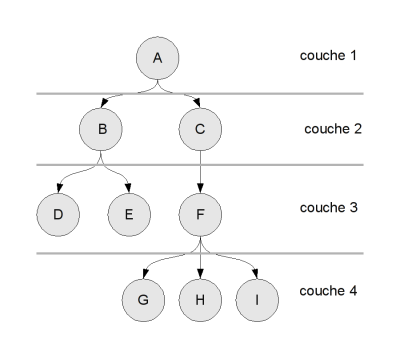

Vous venez d'apprendre les bases d'un langage de programmation ? Vous vous êtes peut-être rendu compte que parfois, en modifiant un peu votre programme, vous pouvez obtenir le même résultat mais 2, 10 ou 1000 fois plus vite ?
De telles améliorations ne sont pas le fruit du hasard, ni même dues à une augmentation de la mémoire vive ou à un changement de processeur : il y a plusieurs manières de programmer quelque chose et certaines sont incroyablement meilleures que d'autres.
Avec un peu de réflexion, et des outils théoriques de base, vous serez vous aussi en mesure de faire de bons choix pour vos programmes. À la fin de ce tutoriel, vous serez de meilleurs développeurs, en mesure de comprendre, corriger et concevoir des programmes plus efficaces.
But du tutoriel
Les deux notions clés de ce tutoriel sont les suivantes : la complexité, et les structures de données. La complexité est une manière d'estimer les performances d'un algorithme. Les structures de données sont la manière dont vous organisez les informations dans votre programme. En choisissant une structure de données adaptée, vous serez capables de coder des opérations très performantes (de faible complexité).
Chaque algorithme résout un problème donné. Pour chaque problème, il existe un ou plusieurs algorithmes intéressants (mais on en découvre de nouveaux tous les ans !). Nous vous présenterons, dans ce tutoriel, un petit panorama de problèmes "courants", dans le but de vous familiariser avec la complexité et les structures de données. Vous apprendrez par exemple à chercher un élément qui vous intéresse à l'intérieur d'un ensemble d'éléments, à trier un ensemble, ou même à trouver le plus court chemin d'un "endroit" à un autre.
Prérequis
Le but de ce tutoriel n'est pas de vous apprendre à programmer. Pour le lire, vous devez déjà savoir programmer. L'apprentissage de l'algorithmique n'utilise pas de concepts bas niveau (assembleur, etc.) ou de bibliothèques logicielles spécialisées (SDL, Qt...), mais vous devez être à l'aise avec les variables, conditions, boucles et fonctions. La connaissance du concept de 'récursivité' (si vous vous sentez en manque, il y a déjà un tuto à ce sujet sur le SDZ) est aussi un avantage.
Le langage que vous utilisez n'est pas très important, car on tentera de formuler les algorithmes d'une manière qui en est indépendante. Nous donnerons aussi, pour les curieux, des exemples dans quelques langages de programmation. Si vous n'y voyez pas le vôtre, trouvez-en un suffisamment proche, et faites un petit effort. :)
La complexité algorithmique est une mesure formelle de la complexité d'un algorithme. Elle s'exprime donc en langage mathématique. Le calcul de certains algorithmes avancés est très compliqué et demande des connaissances mathématiques poussées. Cependant, notre tutoriel se concentre sur des choses simples, et devrait être largement accessible : une connaissance des puissances et des racines (carrées) devrait suffire à être à l'aise. Un objet plus avancé, la fonction logarithme, sera présenté et expliqué avant son utilisation.
Historique
Ce tutoriel est en cours d'écriture. Vous l'avez déjà lu, et vous voulez savoir si quelque chose a été rajouté ? Voici un historique des modifications, les plus récentes en premier :
08 août 2011 : correction d'une bévue repérée par Arnolddu51, et clarification par Cygal de la recherche de racine par dichotomie, suite à une question de bouboudu21
15 juin 2010 : révision de l'implémentation C du tri par fusion sur les listes
13 juin 2010 : diverses reformulations suite aux commentaires des lecteurs (candide, Equinoxe, programLyrique)
12 juin 2010 : implémentation en C du tri par sélection sur les tableaux
juillet 2009 : correction de quelques typos, clarification de certains passages
26 avril 2009 : ajout d'exemples de code pour le chapitre sur les arbres
25 avril 2009 : ajout d'icônes pour les chapitres existants
22 avril 2009 (partie 3) ajout du deuxième chapitre : arbres; les exemples de code sont à venir
20 avril 2009 (partie 3) ajout d'un premier chapitre, assez simple, sur les piles et les files
27 février 2009 (partie 1) reformulation et clarification de certains paragraphes
22 février 2009 : ajout de l'historique, présentation d'un site d'exercices en fin de deuxième partie
18 février 2009 (partie 2) ajout d'exemples de code C pour les listes chaînées
11 février 2009 (partie 2) chapitre "Introduction au problème du tri"
janvier 2009 : zcorrection par ptipilou (rédaction arrêtée à cause d'un bug du SdZ)
mi octobre 2008 (partie 2) chapitre "Notions de structures de données : tableaux et listes chaînées"
début septembre 2008 (partie 2) chapitre "Une classe d'algorithme non naïfs : diviser pour régner", par lasts et Cygal
mi août 2008 (partie 1) publication de la première partie
Un exemple de problème qui nous concerne tous (oui, même vous) est celui de la cuisine : vous êtes dans une cuisine, vous trouvez du riz, comment le cuire ? Voici une marche à suivre simple :
remplir une casserole d'eau ;
y ajouter une pincée de sel ;
la mettre sur le feu ;
attendre l'ébullition de l'eau ;
mettre le riz dans la casserole ;
le laisser cuire 10 à 15 minutes ;
égoutter le riz.
J'ai décrit une solution au problème "il faut faire cuire du riz", sous forme de concepts simples. Vous remarquerez qu'il y a pourtant beaucoup de choses implicites : j'ai précisé que vous étiez au départ en possession du riz, mais il faut aussi une casserole, de l'eau, etc. On peut se trouver dans des situations spécifiques où tous ces objets ne sont pas disponibles, et il faudra alors utiliser un autre algorithme (ou commencer par construire une casserole...).
Les instructions que j'ai utilisées sont "précises", mais on pourrait préciser moins de choses, ou plus. Comment fait-on pour remplir une casserole d'eau, plus précisément ? Si le cuisinier à qui la recette est destinée ne sait pas interpréter la ligne "remplir une casserole d'eau", il faudra l'expliquer en termes plus simples (en expliquant comment utiliser le robinet, par exemple).
De même, quand vous programmez, le degré de précision que vous utilisez dépend de nombreux paramètres : le langage que vous utilisez, les bibliothèques que vous avez à disposition, etc.
Si on trouve des algorithmes dans la vie de tous les jours, pourquoi en parle-t-on principalement en informatique ? La raison est très simple : les ordinateurs sont très pratiques pour effectuer des tâches répétitives. Ils sont rapides, efficaces, et ne se lassent pas.
On peut décrire un algorithme permettant de calculer les décimales de la racine carrée de deux, qui soit utilisable par un humain. Vous pourrez ainsi calculer, à l'aide d'une feuille et d'un crayon, les 10 premières décimales (1,4142135624). Mais s'il vous en faut un million ? Un ordinateur deviendra alors beaucoup plus adapté.
De manière générale, on peut concevoir de nombreux algorithmes comme des méthodes de traitement d'information : recherche, comparaison, analyse, classement, extraction, les ordinateurs sont souvent très utiles pour tripoter la masse d'informations qui nous entoure continuellement.
Vous aurez peut-être pensé au célèbre moteur de recherche Google (qui a initialement dominé le marché grâce aux capacités de son algorithme de recherche), mais ce genre d'activités n'est pas restreint au (vaste) secteur d'Internet : quand vous jouez à un jeu de stratégie en temps réel, et que vous ordonnez à une unité de se déplacer, l'ordinateur a en sa possession plusieurs informations (la structure de la carte, le point de départ, le point d'arrivée) et il doit produire une nouvelle information : l'itinéraire que doit suivre l'unité.
En plus de manipuler l'information, il faut aussi la stocker. La manière dont on organise cette information stockée peut avoir des conséquences très importantes sur leur manipulation.
Concrètement, prenez par exemple un dictionnaire : on peut définir un dictionnaire comme "un ensemble de mots et leur définition". Cependant, pourrait-on utiliser correctement un dictionnaire dont les mots sont placés dans le désordre ? Certainement pas, parce qu'il serait très difficile de trouver la définition d'un mot que l'on cherche (c'est encore possible, il suffit de lire le dictionnaire page par page jusqu'à ce qu'on trouve le mot). L'ordre alphabétique est clairement une solution très efficace pour pouvoir retrouver rapidement le mot que l'on cherche.
Il y a des liens forts entre les algorithmes (qui décrivent des méthodes) et les structures de données (qui décrivent une organisation). Typiquement, certaines structures de données sont indispensables à la mise en place de certaines méthodes, et à l'inverse certains algorithmes sont nécessaires aux structures de données : par exemple, si on veut rajouter un mot dans un dictionnaire classé alphabétiquement, on ne peut pas juste l'écrire dans l'espace libre sur la dernière page, il faut utiliser un algorithme pour l'ajouter au bon endroit. L'étude des structures de données est donc inséparable de celle des algorithmes, et vous n'y échapperez pas. :pirate:
Haskell est un gentil fermier, qui élève des grenouilles. Il a des relations très chaleureuses avec celles-ci, qui peuvent se promener à leur guise dans leur champ pendant toute l'année, et ont droit à une petite cahute avec chauffage pendant l'hiver. Mais ce qui fait véritablement la joie des grenouilles de Haskell, ce sont les vacances : tous les ans, juste avant de s'occuper des moissons, il les amène dans les marécages près de sa ferme pour qu'elles puissent y passer des vacances aquatiques.
Le détail compliqué est le départ en vacances. Haskell charge toutes ses grenouilles dans une grande caisse, qu'il met sur son camion, et part vers les nombreux marécages pour les y déposer. Le problème vient du fait que les grenouilles, surtout pendant les vacances, n'apprécient pas la foule : elles veulent aller dans un des marécages les moins peuplés.
Plus précisément, la caisse est un carré en forme de quadrillage de N cases de large par N cases de long (N est un nombre inconnu de nous, mais fixé). Chaque case de la caisse contient une grenouille. Il y aussi N marécages vides, dans lesquels les grenouilles pourront se répartir.
Jusqu'à présent, Haskell le fermier, qui ne voulait pas se prendre la tête, utilisait la méthode suivante : après avoir chargé le carré de grenouilles sur son camion, il choisissait l'une d'entre elles, et lui demandait de lui désigner le marécage dans lequel elle voulait passer ses vacances, puis l'y amenait.
Après l'avoir déposée, il demandait à une seconde grenouille de choisir son marécage. Celle-ci, préférant les marécages les moins peuplés, choisissait systématiquement un autre marécage encore vide. Il l'y amenait, puis demandait à la grenouille suivante, et ainsi de suite.
Les marécages se remplissaient petit à petit. Dès qu'un marécage était un peu moins peuplé que les autres, les grenouilles suivantes s'y rendaient et sa population augmentait. Globalement, à la fin de la distribution des grenouilles, tous les marécages étaient également peuplés : ils contenaient N grenouilles chacun.
Cette année : choix de groupe
Cette année, Haskell le fermier en a un peu marre des interminables voyages en camion pour satisfaire chaque grenouille. Il a décidé d'appliquer une autre méthode : il va au premier marécage, et y dépose la première rangée de N grenouilles. Celles-ci protestent vigoureusement puisqu'elles sont entassées à N dans un seul marécage, alors que tous les autres sont vides. Mais il les quitte pour aller déposer la deuxième rangée de N grenouilles dans le deuxième marécage, et ainsi de suite jusqu'à avoir vidé chacune des N rangées, et donc rempli les N marécages. À la fin, les grenouilles (qui s'étaient communiqué leur indignation par SMS) se calment, puisqu'elles sont toutes dans un marécage peuplé de N grenouilles, et qu'il n'y a donc plus aucun marécage moins peuplé disponible.
Dans les deux cas, les conditions de départ sont respectées : les grenouilles sont réparties de façon à ce qu'aucun marécage ne soit plus peuplé que les autres, et sont donc satisfaites. Les deux méthodes de Haskell le fermier résolvent bien le problème correctement.
La différence vient du fait que dans la première méthode, chaque grenouille ou presque lui demandait de changer de marécage. Il faisait donc environ autant de voyages en camion qu'il y a de grenouilles. Dans le deuxième cas, il déposait les grenouilles par blocs d'une rangée, et donc faisait moins de voyages : seulement le nombre de rangées de grenouilles.
La différence n'a pas l'air importante, mais cela dépend beaucoup du nombres de rangées. Pour N rangées, comme la caisse est carrée, il y a N grenouilles par rangée, soit au total N*N, ou N2 grenouilles. La méthode habituelle demande environ N2 voyages à Haskell le fermier, alors que la deuxième méthode n'en demande que N.
La deuxième méthode est plus rapide, et surtout le temps gagné en l'appliquant augmente plus il y a de grenouilles. S'il y a 6 rangées de grenouilles et que le déplacement en camion d'un marécage à l'autre dure 5 minutes environ, il faut 6 * 5 = 30 minutes, soit une demi-heure avec la nouvelle méthode, alors qu'il fallait auparavant 6 * 6 * 5 = 180 minutes, soit 3 heures pour répartir le même nombre de grenouilles. Et l'écart se creuse quand il y a plus de rangées : s'il y en a 20, avec le même calcul, il faut un peu moins de 2 heures avec la deuxième méthode, mais 33 heures avec l'ancienne !
Clairement, la nouvelle méthode de Haskell le fermier est bien meilleure. En termes informatiques, on dira que l'algorithme qu'il a choisi est plus performant. On peut même quantifier cette performance en termes de "complexité", c'est ce que l'on verra dans le prochain chapitre.
Quand un programmeur a besoin de résoudre un problème informatique, il écrit (généralement) un programme pour cela. Son programme contient une implémentation, c'est-à-dire si on veut une "transcription dans un langage informatique" d'un algorithme : l'algorithme, c'est juste une description des étapes à effectuer pour résoudre le problème, ça ne dépend pas du langage ou de l'environnement du programmeur ; de même, si on traduit une recette de cuisine dans une autre langue, ça reste la "même" recette.
Que fait, ou que doit faire un programmeur qui implémente un algorithme ? Comme Haskell le fermier, il doit commencer par vérifier que son algorithme est correct, c'est-à-dire qu'il produit bien le résultat attendu, qu'il résout bien le problème demandé. C'est très important (si l'algorithme ne fait pas ce qu'on veut, on n'a pas besoin de chercher à l'optimiser), et c'est parfois l'étape la plus compliquée.
Dans la pratique, la plupart des informaticiens "font confiance" à leurs algorithmes : avec un peu d'habitude et pour des problèmes abordables, un programmeur expérimenté peut se convaincre qu'un algorithme fonctionne correctement, ou au contraire trouver un problème s'il y en a ("et que se passe-t-il si tu as un nombre impair de grenouilles ?"). L'approche plus 'sérieuse' consiste à écrire une preuve que l'algorithme est correct. Il y a différents niveaux de preuves, mais ils sont tous un peu trop formels pour ce tutoriel, et nous n'aborderons sans doute pas (ou alors très brièvement) cet aspect.
Bien sûr, un algorithme correct ne veut pas dire un programme sans bug : une fois qu'on a un algorithme correct, on l'implémente (en écrivant un programme qui l'effectue), et on est alors exposé à toutes les petites erreurs, en partie spécifiques au langage de programmation utilisé, qui peuvent s'incruster pendant l'écriture du programme. Par exemple, l'algorithme ne décrit pas en général comment gérer la mémoire du programme, et la vérification des erreurs de segmentations et autres réjouissances de la sorte est laissée aux soins du programmeur.
Une fois que le programmeur est convaincu que son algorithme est correct, il va essayer d'en évaluer l'efficacité. Il veut savoir par exemple, "est-ce que cet algorithme va vite ?". On pourrait penser que la meilleure façon de savoir ce genre de choses est d'implémenter l'algorithme et de le tester sur son ordinateur. Curieusement, ce n'est généralement pas le cas. Par exemple, si deux programmeurs implémentent deux algorithmes différents et mesurent leur rapidité chacun sur son ordinateur, celui qui a l'ordinateur le plus puissant risque de penser qu'il a l'algorithme le plus rapide, même si ce n'est pas vrai. De plus, cela demande d'implémenter l'algorithme avant d'avoir une idée de sa rapidité, ce qui est gênant (puisque la phase d'implémentation, d'écriture concrète du code, n'est pas facile), et même pas toujours possible : si le problème que l'on veut résoudre est lié à une centrale nucléaire, et demande d'utiliser les capteurs de la centrale pour gérer des informations, on peut difficilement se permettre d'implémenter pour tester en conditions réelles tous les algorithmes qui nous passent par la tête.
Les scientifiques de l'informatique ont créé pour cela un outil extrêmement pratique et puissant, que nous étudierons dans la suite de ce tutoriel : la complexité algorithmique. Le terme de 'complexité' est un peu trompeur parce qu'on ne parle pas d'une difficulté de compréhension, mais d'efficacité : "complexe" ne veut pas dire "compliqué". Un algorithme de forte complexité a un comportement asymptotique (le mot est expliqué dans la prochaine section) moins efficace qu'un algorithme de faible complexité, il est donc généralement plus lent. Mais on peut avoir des algorithmes à très faible complexité qui sont extrêmement compliqués.
L'idée en deux mots de la complexité algorithmique, c'est :
Citation
si je donne à mon programme une entrée de taille N, quel est l'ordre de grandeur, en fonction de N, du nombre d'opérations qu'il va effectuer ?
Elle repose sur le fait que les programmes qui résolvent un problème dépendent des conditions du problème : si les conditions changent, ils peuvent s'effectuer en plus ou moins de temps. La complexité permet de quantifier (mettre une formule mathématique) la relation entre les conditions de départ et le temps effectué par l'algorithme.
Pour "compter les opérations", il faut décider de ce qu'est une opération. À cette question, les sages scientifiques n'ont pas pu répondre définitivement, parce que le choix dépend du problème (et même de l'algorithme) considéré. Il faut en fait choisir soi-même quelques petites opérations que l'algorithme effectue souvent, et que l'on veut utiliser comme opérations de base pour mesurer la complexité. Par exemple, pour faire une omelette, on peut considérer que les trois opérations de base sont de casser un oeuf, de battre un oeuf en omelette, et de faire cuire un oeuf battu en omelette. On peut donc pour chaque recette compter le nombre d'oeufs cassés, cuits et battus, et avoir ainsi une idée de la complexité de la recette (l'omelette étant un plat bien connu et codifié, on peut s'attendre à ce que toutes les recettes aient la même complexité : pour N oeufs, on effectue 3N opérations) : l'ajout de sel, poivre ou herbes est très rapide, et n'a pas besoin d'être pris en compte dans l'analyse de la complexité (donc indirectement des performances de ma recette).
Par exemple, dans le cas de Haskell le fermier, on peut dire que pour N rangées de grenouilles, il a besoin avec sa vieille méthode d'environ N2 déplacements de camion, et seulement de N déplacements avec la nouvelle. C'est une bonne mesure de la complexité, car le déplacement du camion est vraiment l'opération importante à prendre en compte : c'est la plus longue des opérations simples (sortir une grenouille, choisir un lieu, etc.) qu'il effectue : on peut donc s'attendre à ce que le temps total soit quasiment exactement le temps passé en déplacement de camion, que l'on peut donc relier directement aux performances globales de son algorithme.
Ne vous inquiétez pas si cette notion est toujours un peu floue pour l'instant, vous l'assimilerez sans doute mieux avec les deux exemples concrets dans le chapitre suivant. ^^
J'ai dit que la complexité était une mesure du comportement asymptotique de l'algorithme. Que veut dire ce mot compliqué ?
Il veut dire "quand l'entrée devient très grande" (voire même "tend vers l'infini"). "entrée" désigne ici la quantification des conditions de départ de l'algorithme. Dans le cas de Haskell le fermier, cela voudra dire "quand il y a beaucoup de rangées de grenouilles", par exemple 200. En informatique, "beaucoup" a un sens légèrement différent : un moteur de recherche dira "quand il y a beaucoup de pages web", comme par exemple, 100 milliards...
Il y a deux conséquences (qui sont en fait liées aux fondements mathématiques de la notion de complexité, qui ne seront pas abordés ici). D'une part, les temps constants ne sont pas pris en compte. On appelle "temps constants" les délais qui ne dépendent pas de l'entrée. Par exemple, si avant d'emmener ses grenouilles en vacances, Haskell le fermier remet de l'huile de tournesol dans son camion, le temps de remplissage de son réservoir est considéré "constant" : qu'il aie 10 ou 100 rangées de grenouilles, cela met autant de temps. Comme on considère l'efficacité de l'algorithme quand il y a "beaucoup" de grenouilles, le temps de remplissage du réservoir sera négligeable devant le temps de déplacement des grenouilles.
D'autre part, les "facteurs multiplicatifs constants" ne sont pas non plus pris en compte : la mesure de la complexité ne fait pas la différence entre un algorithme qui effectue (en fonction de N) N, 2N ou 157N opérations.
Pourquoi cette décision ? Considérez les deux algorithmes suivants, dépendant de N :
faire N fois l'opération A
faire N fois (l'opération B puis l'opération C)
Dans le premier cas, on fait N fois l'opération A, et dans le deuxième cas on fait au total N fois l'opération B, et N fois l'opération C. En admettant que ces deux algorithmes résolvent le même problème (donc sont corrects), et que toutes les opérations sont prises en compte pour la mesure de la complexité, le premier algorithme fait N opérations et le deuxième 2N.
Mais est-ce que l'on peut dire lequel est le plus rapide ? Pas du tout, car cela dépend des temps mis par les trois opérations : peut-être que B et C sont tous les deux quatre fois plus rapides que A, et que globalement c'est donc l'algorithme en 2N opérations qui est le plus rapide.
Plus généralement, les facteurs multiplicatifs n'ont pas forcément d'influence sur l'efficacité d'un algorithme, et ne sont donc pas pris en compte dans la mesure de la complexité. Cela permet aussi de répondre à notre question de tout à l'heure : si deux programmeurs ont deux ordinateurs, et que l'un est plus rapide que l'autre, il sera par exemple 3 fois plus rapide en moyenne ; ce facteur constant sera négligé, et les deux programmeurs peuvent donc comparer la complexité de leurs algorithmes sans problème.
On a donc négligé pas mal de choses, ce qui aboutit à une notion plutôt simple et assez générale. Cette généralité fait de la complexité un outil très pratique, mais elle a évidemment des inconvénients : dans certains cas très particuliers, un algorithme plus complexe mettra en réalité moins de temps à s'effectuer (par exemple, les facteurs constants peuvent jouer en réalité un rôle très important : et si le réservoir de Haskell le fermier était énorme et mettait toute la journée à se remplir ?). Cependant, dans la grande majorité des cas, la complexité est une indication fiable des performances de l'algorithme. En particulier, le fait que ce soit une mesure asymptotique veut dire que les écarts entre deux complexités se font de plus en plus importants quand la taille de l'entrée augmente. Un algorithme en N opérations longues sera peut-être un peu plus lent qu'un algorithme en N*N opérations très rapides quand N vaut 10 ou 20, mais pour N = 3000 ou N = 8 millions, l'algorithme le moins complexe sera très certainement le plus rapide.
On a vu que la complexité ne prenait en compte qu'un ordre de grandeur du nombre d'opérations (on néglige des choses). Pour représenter cette approximation on utilise une notation spécifique, la notation O. Par exemple, pour dire que (avec N rangées de grenouilles) la première méthode de Haskell s'effectue en environ N2 opérations, on dit qu'elle a une complexité O(N2). De même, la deuxième méthode, plus rapide, a une complexité O(N).
La notation O est comme un grand sac, qui permet de ranger ensemble des nombres d'opérations différents, mais qui ont le même ordre de grandeur. Par exemple, des algorithmes effectuant environ N opérations, 2*N+5 opérations ou N/2 opérations ont tous la même complexité : on la note O(N) (lire "grand O de N"). De même, un algorithme en (2*N2 + 3*N + 5) opérations aura une complexité de O(N2 ) : on néglige les termes 3*N et 5 qui sont de plus petits degrés que 2N2 , donc croissent moins vite.
Plus généralement, si f(N) désigne une expression mathématique dépendant de la variable N qui représente un nombre (le choix du nom de la variable N est libre : on pourrait aussi la noter par exemple E, P ou R), O(f(N)) désigne la complexité des algorithmes s'exécutant en "environ" (pour une signification bien précise de cet "environ") f(N) opérations.
La signification de la notation O (appelée aussi "notation de Landau") varie légèrement selon les auteurs, et certains utilisent d'autres notations approchantes (par exemple, on peut faire une distinction entre "environ N opérations ou (beaucoup) moins" et "précisément environ N opérations", mais utiliser O pour exprimer précisément la complexité d'un algorithme est une convention commune aux scientifiques du domaine. Si vous décidez de vous spécialiser dans l'algorithmique (ou que vous avez la chance d'étudier les comportements asymptotiques en analyse), il vous faudra sans doute approfondir un peu plus les fondements formels de cette notation, mais cela devrait largement suffire pour ce texte, et plus généralement pour une compréhension solide de la complexité des algorithmes (qui dépend en pratique remarquablement peu des subtilités mathématiques de la notation O).
On peut faire plusieurs choix pour exprimer le plus précisément possible la complexité d'un algorithme. On a choisi tout d'abord une quantification des conditions d'entrée, par exemple par la variable N (pour N rangées de grenouilles, N pages web, N réacteurs nucléaires, etc.). On peut évidemment choisir un autre nom de variable, mais surtout on peut avoir plusieurs variables différentes. Si on cherche à tondre la pelouse d'un jardin rectangulaire, on exprimera sans doute sa complexité en fonction à la fois de la largeur L et de la longueur R du jardin. De même, si Haskell le fermier avait plus de rangées de grenouilles que de marécages disponibles, il pourrait calculer ses algorithmes en fonction à la fois du nombre N de rangées de grenouilles et du nombre M de marécages.
Mais un autre choix important est celui du type des opérations à mesurer. On a parlé jusqu'ici d'efficacité ou de performances, termes plutôt flous, ou de rapidité. Il faut savoir, et c'est très important, que les programmeurs ne s'intéressent pas uniquement au temps d'exécution de leurs algorithmes. Il peuvent en mesurer bien d'autres caractéristiques, la plus courante étant la consommation mémoire.
C'est aussi une mesure de la complexité. Si par exemple vous avez besoin d'allouer en moyenne N Kilo-octets de mémoire pour un algorithme dont l'entrée est de taille N, la complexité mémoire est en O(N). Plus généralement, on ne connaît pas la taille concrète (en octets) demandée par l'algorithme, mais un ordre de grandeur des structures utilisées : si vous utilisez N tableaux de taille N (par exemple, un par rangée de grenouilles, qui contient le nom de chacune des grenouilles de la rangée) vous avez une complexité mémoire en O(N2 ). Si on remarque qu'on n'a besoin que d'une rangée à la fois, et qu'on n'alloue qu'un seul tableau à la fois au lieu de N en même temps, on a une complexité en O(N).
Il est intéressant en général de mesurer à la fois la complexité en temps (la rapidité d'exécution) et en mémoire (la quantité d'espace occupé pendant l'exécution) de l'algorithme. Dans les cas simples la complexité mémoire est très simple, mais pour des problèmes plus compliqués, elles peuvent interargir de manière très riche : on peut choisir par exemple de sacrifier un peu de rapidité d'exécution pour utiliser moins de mémoire, ou au contraire d'augmenter la vitesse en augmentant la complexité en mémoire de notre algorithme, par exemple en stockant dans un tableau les résultats déjà calculés (c'est le principe de la mise en cache).
Plus les contraintes sur les programmes sont fortes, plus on a besoin d'informations précises. Dans certains domaines de l'informatique on s'intéressera à d'autres caractéristiques, parfois mesurables elles aussi en terme de complexité, des algorithmes. Par exemple, un programmeur pour calculatrice ou système embarqué pourra s'interroger sur la consommation électrique de son algorithme, afin d'économiser la batterie. Dans le cas général, on s'intéressera cependant uniquement aux complexités en temps et en mémoire, et même principalement à la complexité en temps.
Le nombre d'opérations qu'effectue un algorithme dépend évidemment des conditions de départ. Par exemple, voici un algorithme très simple permettant de savoir si une valeur donnée se trouve ou non dans une liste de valeurs (par exemple "est-ce que j'ai déjà mis la farine dans ma liste de course ?") :
pour savoir si la valeur se trouve dans la liste, on parcourt la
liste, en s'arrêtant si on trouve la valeur recherchée. Si on
a parcouru toute la liste sans rien trouver, c'est qu'elle ne contient
pas la valeur recherchée.
Imaginons que l'élément que l'on cherche ne se trouve pas dans la liste, et que celle-ci est de taille L. Pour vérifier qu'il ne s'y trouve pas, l'algorithme a parcouru tous les éléments de la liste, en comparant chaque élément avec celui que l'on cherche : on a donc effectué L comparaisons. On peut donc dire que notre algorithme a une complexité de O(L). On dit aussi qu'il s'exécute en temps linéaire (car sa progression est linéaire : si on double la taille de la liste d'entrée, il mettra deux fois plus de temps, de même que si on double la longueur d'une ligne droite, vous mettrez deux fois plus de temps à la parcourir).
Mais que se passe-t-il si l'élément recherché se trouve au tout début de la liste ? Par exemple, si "farine" se trouve en premier dans notre liste de course, on s'en apercevra immédiatement et on arrêtera la recherche après avoir fait une opération seulement. Dans d'autres cas on s'arrêtera au bout de 2, 3 opérations, même si la liste contient 5000 éléments.
C'est là qu'intervient la notion de "pire des cas" : quand on calcule la complexité d'un algorithme, on peut considérer que l'entrée donnée est la "pire" possible pour notre algorithme. Ici par exemple, on calculera le nombre d'opérations avec une entrée qui demande le plus grand nombre d'opérations (et non pas juste une ou deux), c'est à dire une liste qui ne contient pas la valeur recherchée.
C'est une sorte de sécurité du point de vue du programmeur : les complexités calculées étant dans le "pire des cas", il sait que ça se passera forcément mieux. De la même façon que les programmeurs web sécurisent leurs applications en se demandant "qu'est-ce que l'utilisateur le plus malicieux pourra entrer comme texte pour pirater mon site ?", l'algorithmicien se demande "quelle est la liste vicieuse qui fera prendre plein de temps à mon algorithme, et combien ?".
Cette méthode permet de mesurer ce qu'on appelle "complexité dans le pire des cas". Dans le cadre de ce tuto, nous nous intéresserons quasi-uniquement à cette méthode de mesure, donc les complexités seront toujours (sauf indication expresse) exprimées dans ce cadre.
L'intérêt pour le pire des cas vient du fait que très souvent, une situation quelconque a un comportement assez proche du pire des cas. Pour notre exemple, supposons que l'élément se trouve effectivement dans la liste, mais qu'il soit placé à une position aléatoire, inconnue du programmeur. Elle a autant de chances de se trouver au début de la liste (donc qui s'arrête très vite), qu'au milieu ou carrément à la fin (on doit alors parcourir toute la liste). En moyenne, on fera donc un demi-parcours par essai : entre un parcours complet et un demi-parcours, il y a seulement un facteur multiplicatif constant, donc c'est équivalent du point de vue de la complexité.
Il existe des algorithmes dont le cas "moyen" et le pire des cas ont une complexité très différente. Dans ce cas, il est possible de faire des études plus approfondies, avec d'autres méthodes de calcul de la complexité, mais ce sujet plus délicat ne sera pas abordé pour l'instant.
C'est bien beau, la complexité, mais quel est le rapport avec un "cours d'algorithmique" ?
L'algorithmique est la science de la conception et de l'étude des algorithmes. Elle est bien antérieure à l'informatique telle que vous la connaissez, mais aujourd'hui pratiquée quasi-exclusivement par des scientifiques informaticiens. C'est un domaine très vaste, et qui demande un niveau avancé de connaissances mathématiques.
Tous les informaticiens n'ont pas besoin d'être des algorithmiciens de génie. En effet, les problèmes auxquels sont confrontés la plupart des programmeurs sont en réalité assez simples du point de vue algorithmique, et jouent sur beaucoup d'autres aspects et difficultés de la programmation (fiabilité face aux bugs, respect des spécifications, ergonomie de l'interface, interopérabilité, etc.).
Cependant, vous aurez quelque fois besoin de mettre en place quelque chose d'un peu plus sophistiqué. Dans ce cas, des connaissances de base en algorithmique pourraient se révéler très utiles. On ne vous demande pas d'inventer vous-mêmes un nouvel algorithme révolutionnaire et de faire une preuve béton de sa complexité, mais ne serait-ce que pour pouvoir utiliser de manière adaptée les algorithmes que vous trouverez sur le net ou dans vos bibliothèques logicielles, il est nécessaire d'avoir une formation de base.
Une connaissance de l'algorithmique vous permettra donc d'être plus efficace, de comprendre mieux les indications sur ce sujet qui vous entourent, et aussi de ne pas écrire de choses aberrantes : certains codes sont justes mais sont absurdes d'un point de vue algorithmique. Là où un programmeur non averti risquera de les utiliser ("ça marche donc ça va"), vous repérerez rapidement le problème et pourrez mettre en place une vraie solution.
Après ces palabres, vous avez sans doute envie de mettre un peu les mains dans le cambouis. Voici deux petites études de complexité très simples, qui devraient vous permettre d'avoir une idée un peu plus précise des raisonnements destinés à mesurer la complexité.
Vous disposez d'une liste d'entiers positifs, et vous voulez trouver le plus grand de la liste. La façon classique de procéder est la suivante : on parcourt la liste en conservant tout du long : l'élément le plus grand trouvé jusqu'à présent, que l'on nomme "maximum actuel".
Au début, le maximum actuel est 0. On compare chaque élément avec le
maximum actuel : s'il est plus grand que le maximum connu, il devient
le maximum actuel à son tour. À la fin du parcours, le maximum actuel
est le maximum de tout le tableau.
Voici deux implémentations de cet algorithme, l'une en PHP, l'autre en OCaml :
<?php
function maximum($liste) {
$max_actuel = 0;
foreach ($liste as $elem)
if ($elem > $max_actuel)
$max_actuel = $elem;
return $max_actuel;
}
?>
let maximum liste =
let rec parcours max_actuel = function
| [] -> max_actuel
| elem::reste -> parcours (max max_actuel elem) reste
in parcours 0 liste
On peut en fait utiliser des fonctions des bibliothèques du langage pour implémenter notre algorithme de manière bien plus concise, mais ce n'est pas le sujet de ce tutoriel.
On peut rapidement vérifier que cet algorithme est correct : il s'agit de vérifier que le maximum actuel contient bien, pendant toute l'exécution de l'algorithme, le plus grand des éléments de la liste lus jusqu'à présent. C'est vérifié dès la lecture du premier élément (puisqu'il est positif, et comparé à 0), et cette propriété est conservée quand on lit l'élément suivant : s'il est plus petit que le maximum courant, il ne se passe rien, et s'il est plus grand il devient le nouveau maximum courant, qui reste donc bien le plus grand élément lu. À la fin de l'algorithme, il contient le plus grand des éléments lus, donc (comme on a lu toute la liste), le plus grand des éléments de la liste.
On peut remarquer que l'algorithme "termine", ne boucle pas à l'infini : en effet, il parcourt toute la liste puis s'arrête, donc s'arrête si la liste est finie. Cela a l'air d'un détail sans importance, mais il existe en réalité des langages pouvant représenter des listes (ou séquences) infinies d'éléments : dans ce cas, notre algorithme ne serait pas correct.
Passons maintenant à l'étude de la complexité proprement dite. Quelles sont les opérations à prendre en compte ? Clairement, le gros du travail consiste à comparer l'élement courant avec le maximum actuel (ce n'est pas par exemple l'initialisation de la variable max_actuel qui occupe le temps d'exécution de l'algorithme). On va donc compter le nombre de comparaisons.
De quels paramètres dépend le temps d'exécution de l'algorithme ? Il ne dépend pas de la valeur des éléments de la liste (note : on suppose que la comparaison de deux entiers s'effectue en temps constant, quelle que soit leur valeur. Certains langages peuvent représenter des entiers de très très grande taille et ce n'est alors plus forcément vrai). On choisit de quantifier l'entrée selon la longueur N de la liste d'éléments.
Pour une liste de N éléments, on effectue N comparaisons : une par élément, avec le maximum actuel. La complexité de l'algorithme est donc en O(N) : il s'effectue en temps linéaire. Qu'en est-il de la complexité mémoire ? L'algorithme utilise une liste d'éléments, qui occupe sans doute de la place en mémoire. Cependant, cette liste existait déjà avant qu'on en cherche le plus grand élément, et n'a pas été allouée par notre algorithme : on ne la prend pas en compte pour la mesure de la complexité mémoire (on ne compte que la mémoire directement réclamée par l'algorithme). Celui-ci n'effectue pratiquement aucune allocation, au pire une variable temporaire, pour stocker le maximum actuel. Cet espace mémoire ne dépend pas de la longueur de la liste : l'occupation mémoire de notre algorithme est constante (on note aussi O(1), pour dire que ça ne dépend pas de N).
Il reste un petit détail à remarquer au sujet de notre algorithme : si la liste d'éléments que l'on lui fournit est vide, il renvoie 0. Dire que le maximum d'une liste vide est 0 n'est pas forcément correct : dans certains cas, il vaudrait mieux renvoyer une erreur. On peut donc modifier notre algorithme comme ceci : au lieu de considérer que le maximum actuel au départ vaut 0, on fixe sa valeur à celle du premier élément de la liste (si la liste est vide, on renvoie une erreur). On continue alors les comparaisons en partant du deuxième élément.
Ce nouvel algorithme effectue N-1 comparaisons (vu qu'on ne compare pas le premier élément à lui-même). Cependant, cela ne change pas la complexité : la différence de temps entre N et N-1 comparaisons ne dépend pas de N, elle est constante. On peut donc la négliger (pour des listes un peu grandes, cela ne fera aucune différence) : les deux algorithmes ont la même complexité, ils sont linéaires (c'est-à-dire en O(N)). Enfin, on peut remarquer que le deuxième algorithme marche aussi pour des nombres négatifs (alors que si la liste ne contient que des nombres strictement négatifs, le premier algorithme renvoie 0, ce qui est faux). Il est donc plus général, et sans doute préférable.
Voici un deuxième problème dont la solution présente une complexité facile à étudier. On dispose (encore !) d'une liste d'éléments, qui contient des doublons (des éléments présents plusieurs fois) que l'on veut éliminer : on veut récupérer une liste contenant les mêmes éléments, mais où chaque élément ne serait présent qu'une seule fois.
Pouvez-vous penser à un algorithme permettant de faire cela ? Essayez de le chercher, avant de lire la solution proposée ici.
Solution proposée
L'algorithme proposé est le suivant :
On constitue une "liste des éléments uniques déjà rencontrés" (que
l'on va appeler U comme Unique), qui au départ est vide. On parcourt
la liste donnée en entrée, et pour chaque élément, on regarde s'il
est présent dans U (on peut utiliser pour cela l'algorithme présenté
dans la section précédente). S'il n'y est pas, on l'y ajoute. À la
fin du parcours, U contient tous les éléments uniques de la liste de
départ : on peut la renvoyer, c'est une solution à notre problème.
Exercice : implémentez l'algorithme de récupération des éléments uniques d'une liste dans le langage de votre choix.
Complexité
Quelle est la complexité de cet algorithme ? Si vous avez bien compris le calcul de la complexité des algorithmes précédents, celui-ci vous paraît peut-être simple, mais autant faire trop que pas assez.
Pour chaque élément de la liste de départ, on effectue un parcours de la liste U, donc autant d'opérations que U a d'éléments. Le problème c'est que la taille de U change pendant le parcours de la liste de départ, puisqu'on y ajoute des éléments. Quand on considère le premier élément, la liste U est vide (donc on n'effectue aucune opération). Quand on considère le deuxième élément, U a 1 élément, donc on effectue une opération de plus.
Mais quand on arrive au troisième élément, on ne peut plus être aussi sûr : soit les deux premiers éléments étaient différents, et ils ont tous les deux été ajoutés à U, et dans ce cas on effectue 2 opérations, soit ils étaient égaux et le deuxième n'a pas été ajouté : on n'effectue qu'une seule opération. Comme on l'a déjà dit, on calcule la complexité dans "le pire des cas" : c'est-à-dire celui qui nous fait faire le plus d'opérations. On va donc considérer que tous les éléments de la liste de départ sont différents (puisque c'est la situation qui crée la liste U la plus grande, et donc demande le plus d'opérations).
Dans le pire des cas, on ajoute à U tous les éléments de la liste de départ, un par un. Au n-ième élément de la liste de départ, on a donc ajouté les (n-1) éléments précédents, ce qui fait n-1 opérations. On a donc au total 0 + 1 + 2 + ... + (L-1) opérations (L-1 opérations pour le dernier élément de la liste). On a fait très peu d'opérations au début mais beaucoup d'opérations à la fin : cela se compense et au total cela fait environ L*L/2, soit L2 /2, opérations (si vous ne connaissez pas la formule, vous trouverez une analyse plus détaillée de cette somme dans le tuto sur le tri par insertion). Notre algorithme a donc une complexité en temps de O(L2 ) : on enlève le facteur 1/2 constant. Il faut savoir que pour O(L2) on dit aussi "quadratique" (comme on dit "linéaire" pour O(L)), parce que ça augmente "au carré".
En plus d'être plus lent, l'algorithme a aussi une complexité en mémoire plus importante : on a construit une liste (donc demandé de l'espace mémoire) qui n'existait pas au départ. Dans le pire des cas, la liste U a autant d'éléments que la liste de départ : on aurait donc alloué de l'espace pour L éléments, ce qui fait une complexité mémoire de O(L) : l'utilisation mémoire était constante pour le premier algorithme, elle est maintenant linéaire.
On peut au passage remarquer que cet algorithme demande uniquement de comparer des éléments entre eux. En particulier, ils n'ont pas besoin d'être des entiers naturels : on pourrait très bien utiliser le même algorithme pour éliminer des doublons dans une liste de mots, de couples de nombres à virgule, etc. De nombreux algorithmes s'expriment ainsi, indépendamment du type concret des éléments des structures manipulées.
Il existe une autre solution, à laquelle vous avez peut-être (si vous êtes un peu tordus :p ) pensé en réfléchissant à l'algorithme : il est possible de commencer par trier les éléments de la liste. Ainsi, tous les éléments identiques se retrouvent côte à côte, et il devient très simple d'éliminer les doublons :
Citation
Il suffit de parcourir la liste en se souvenant du dernier élément parcouru. Si l'élément actuel est le même que l'élément précédent, alors c'est un doublon et on ne l'inclut pas dans la liste des éléments uniques.
L'algorithme n'est plus valable si les éléments égaux ne sont pas juste à côté les uns des autres, donc il faut forcément trier la liste avant. Quelle est sa complexité ? L'élimination des doublons se fait en un seul parcours de la liste, elle est donc linéaire. Mais comme on a dû trier la liste avant, ce tri a aussi effectué des opérations qu'il faut prendre en compte dans la complexité totale de ce deuxième algorithme.
C'est un peu de la triche, parce que vous ne savez pas encore comment trier les éléments d'une liste (j'espère que vous saurez le faire, et même de plusieurs manières différentes, à la fin de ce cours). Vous aurez donc dû utiliser une des fonctions de votre langage de programmation ou d'une bibliothèque externe fournie à côté, ce qui ne correspond pas forcément à la définition d'un algorithme, qui demande des descriptions "précises, à l'aide de concepts simples" : on peut attendre d'un ordinateur qu'il sache parcourir une liste ou comparer des éléments, mais trier c'est plus difficile (un peu comme ranger sa chambre, ou sa centrale nucléaire). Quand vous connaîtrez de nombreux algorithmes, vous pourrez facilement les utiliser pour mettre au point vos propres solutions, mais actuellement vous devriez vous limiter à ce que vous avez déjà conçu (donc, pas de tri de tableau).
Dans tous les cas, cette méthode marche, et le fait que ce soit de la triche ne me permet pas d'esquiver la question de la complexité. Il se trouve que la complexité de cet algorithme dépend de la complexité du tri : si par exemple le tri effectue environ L2 opérations, c'est beaucoup plus que les L opérations que l'on fait ensuite, et la complexité globale est bien en O(L2 ). Cependant, il existe des tris plus sophistiqués (et plus compliqués) qui, tout en faisant toujours plus de L opérations (et en ayant dans le cas général une complexité plus grande que O(L)), font beaucoup moins de L2 opérations. Nous le verrons le moment venu, mais ces tris là produisent un algorithme plus efficace que le premier proposé, qui est plus "naïf".
Enfin, il faut noter qu'il n'est pas nécessaire de trier la liste pour obtenir un algorithme plus efficace. On peut aussi choisir d'utiliser à la place de la liste U une structure de données plus efficace : dans notre cas, il faudrait qu'elle puisse répondre rapidement à la question "l'élément machin a-t-il déjà été rencontré ?". Si l'on peut y répondre sans parcourir toute la structure (comme on fait pour U), on peut avoir un algorithme plus rapide. De telles structures de données existent, et permettent d'obtenir un algorithme aussi efficace qu'avec le tri (en plus, comme il est proche de l'algorithme naïf, il est plus naturel à concevoir et plus facile à comprendre), mais nous ne les aborderons pas non plus tout de suite.
Vous avez maintenant déjà trois algorithmes dans votre carquois.
La recherche d'un élément donné dans une liste, et la recherche du plus grand élément d'une liste sont des algorithmes assez proches, linéaire en temps (en O(N)) et à utilisation mémoire constante (en O(1)). L'élimination des éléments en double dans une liste est plus compliquée, puisque l'algorithme le plus simple a une complexité quadratique (en O(N*N)) en temps et linéaire en mémoire.
J'espère que ces études plus concrètes (mais avec encore un peu trop de blabla) vous ont convaincus que cette discipline servait quand même parfois à quelque chose, et que vous commencez à vous habituer aux concepts de base : algorithme, complexité en temps et en mémoire, structure de données.
Maintenant que vous avez vos premières notions concernant ce qu'est la complexité algorithmique, il est temps de faire une introduction au concept de structure de données que l'on vous a fait miroiter dans l'introduction. Tout comme la première partie, nous ne ferons rien de compliqué pour l'instant, mais les bases présentées ici seront utiles pour la suite du cours.
Nous nous concentrerons sur deux structures extrêmement courantes : les listes (simplement chaînées) et les tableaux.
Le principe de base d'une structure de données, c'est de stocker des éléments auxquels le programmeur veut pouvoir accéder plus tard. On appelle les différentes utilisations possibles de la structure de données des opérations.
Par exemple, une opération courante est la lecture : on veut récupérer un élément stocké dans la structure. Il existe de nombreuses autres opérations, comme l'insertion, qui rajoute un nouvel élément dans la structure de données, ou la suppression, qui en enlève.
Toutes les structures de données ne permettent pas les mêmes opérations, et surtout elles n'ont pas toujours le même coût. Par exemple, sur certaines structures, il est très rapide d'ajouter un élément, dans d'autres c'est difficile et cela peut demander une réorganisation complète. Le coût des structures de données peut se mesurer assez finement, mais ce qui nous intéresse dans ce cours, c'est la complexité : pour chaque structure de données utilisée, on essaiera d'avoir une bonne idée de la complexité des opérations que l'on effectue.
Cette connaissance des coûts a deux intérêts : quand on nous donne un algorithme utilisant une structure de données particulière, on a besoin de connaître le coût (la complexité) des opérations effectuées pour évaluer la complexité globale de l'algorithme. Mais surtout, et c'est sans doute l'aspect le plus intéressant, quand on a une idée des opérations dont on a besoin pour un algorithme, on peut choisir la structure de données la plus adaptée (celle pour laquelle ces opérations sont les moins coûteuses).
Dans la pratique, la plupart des gens utilisent des algorithmes assez simples (qui ne reposent pas sur des manipulations sophistiquées), où le seul choix de la bonne structure de données peut faire la différence au niveau des performances. Bien connaître ses structures de données et savoir faire un choix joue donc un rôle très important pour le programmeur.
Tableaux
Le tableau est sans doute la structure de données la plus courante, du moins dans les langages dérivés ou inspirés par le langage C.
Le principe d'un tableau est très simple : on stocke les éléments dans des cases, chaque case étant étiquetée d'un numéro (généralement appelé indice). Pour accéder à un élément particulier d'un tableau, on donne son indice.
Les indices sont des entiers consécutifs, et on considérera qu'ils commencent à 0, comme dans la plupart des langages de programmation. Le premier élément est donc à l'indice 0, le deuxième à l'indice 1, etc. (attention au décalage). En particulier, si n est la taille du tableau, le dernier élément se trouve à l'indice n-1. Demander l'accès à un indice qui n'existe pas provoque une erreur.
On considère que la taille d'un tableau est toujours connue (le programmeur a dû la connaître quand il a demandé la création du tableau, et ensuite il suffit de la conserver).
Le temps de création du tableau dépend des langages. En général, la fonction de création met dans chaque case une valeur par défaut, et son temps d'exécution est alors proportionnel à la longueur du tableau (donc en complexité O(N) si N est la taille du tableau). Cependant, il est possible dans certains langages de créer des tableaux "non initialisés" (avec des valeurs inconnues pour chaque case) plus rapidement. C'est une pratique qui peut être dangereuse car on a alors parfois des valeurs qui n'ont aucun sens dans notre tableau. On considérera ici que tous les tableaux sont initialisés dès leur création, et donc qu'elle est toujours en O(N).
Listes
La liste est une structure de données extrêmement utilisée. En particulier, elle a joué un rôle majeur dans le langage Lisp et reste très présente dans les nombreux langages qui s'en sont inspirés.
Remarque : pour décrire correctement une liste, je suis forcé de m'écarter légèrement des pures considérations algorithmiques, pour détailler un peu plus précisément la manière dont les langages de programmation gèrent les structures de données. Je vais utiliser ici une description indépendante du langage de programmation : on parlera de cellules possédant un ou plusieurs champs. Une cellule est tout simplement un ensemble de cases qui permettent de stocker des données, et auxquelles on accède par leur nom (que l'on appelle nom du champ, comme les champs des formulaires par exemple). Par exemple, on pourra décrire une structure servant à stocker l'adresse et le numéro d'une personne comme une cellule à trois champs, nom, adresse et téléphone.
Selon votre langage, les cellules auront des formes différentes : struct en C, objets en Java, etc. : à vous de choisir la traduction qui vous plaît le plus. Nous ne rentrerons pas non plus dans les détails de bas niveau sur l'organisation mémoire, mais il est bon d'avoir un modèle commun pour pouvoir discuter.
On considérera de plus que la création (et la destruction) d'une cellule (si elle a un nombre fixé de champs), ainsi que la lecture ou la modification d'un champ, se fait en temps constant.
Venons-en maintenant à la définition d'une liste. Une liste est :
soit la liste vide ;
soit une cellule à deux champs, un champ tête contenant un élément, et un champ queue contenant l'adresse d'une autre liste.
Autrement dit, une liste est "soit vide, soit un élément suivi d'une liste". Cette définition est amusante car elle est récursive : elle utilise le mot "liste". La définition d'une liste utilise la définition d'une liste ! Mais, de même que les programmes récursifs ne tournent pas tous en boucle à l'infini, cette définition n'est pas un cercle vicieux, et elle est tout à fait correcte (vous le verrez à l'usage).
Une liste peut donc être la liste vide (0 élément), ou un élément suivi de la liste vide (1 élément), ou un élément suivi d'un élément suivi de la liste vide (2 éléments), etc.
On dira que l'élément dans le champ tête est la tête de la liste, et que la liste dans le champ queue est sa queue. La queue d'une liste contient tous les éléments de la liste, sauf le premier. Par exemple, la queue de la liste [1; 2; 3] est [2; 3]. Bien sûr, la liste vide n'a ni queue ni tête : essayer d'accéder à un de ces champs provoque une erreur.
Il existe en réalité de nombreuses variantes de cette structure. J'ai décrit ici la plus simple, que l'on appelle aussi liste simplement chaînée car les cellules contiennent seulement, en plus d'un élément, une flèche vers le suivant (on imagine que ces flèches forment une chaîne). D'autres structures sont utiles dans des cas particuliers (par exemple on peut mettre deux flèches par cellule, une vers l'élément suivant, et une vers l'élément précédent, c'est le principe de la liste doublement chaînée), mais celle-ci est la plus courante et la plus utile.
Implémentation : la représentation des listes chainées dépend beaucoup des langages de programmation. Dans les langages fonctionnels, ce type est déjà défini (par exemple en Caml on note [] la liste vide et tete::queue la cellule dont la tête est tete et la queue queue. En C, il faut le construire soi-même. On utilise une représentation très classique : une structure pour les cellules, et le pointeur NULL pour la liste vide :
struct list
{
int val;
struct list *next;
};
typedef struct list List;
On représentes alors les listes comme des pointeurs vers une cellule :
List *une_liste;
Comme en C, il faut allouer et libérer la mémoire à la main, on aura aussi besoin d'une fonction qui libère toutes les cellules d'une liste :
void free_list(List *list)
{
while (list != NULL) { /* tant que la liste n'est pas vide */
List *cell = list;
list = list->next;
free(cell);
}
}
À chaque étape de la boucle while, on stocke la tête de la liste dans une variable cell, on avance dans la liste (list devient la queue de la liste), et on libère cell. On est obligé d'utiliser cette variable intermédiaire, parce que si on commençait par free(list), alors list->next n'aurait plus de sens (puisque list a été effacée) et on ne pourrait pas passer à la suite de la liste.
Quelle est la manière la plus simple d'ajouter, ou d'enlever un élément à un tableau ou à une liste ?
Pour une liste, ces deux opérations sont très simples tant que l'on considère seulement un ajout (ou une suppression) en tête de liste : pour supprimer l'élément de tête, il suffit de remplacer la liste par sa queue (qui est la liste de tous les éléments suivants). Pour ajouter un élément en tête, il suffit de créer une nouvelle cellule, de mettre cet élément dans le champ tête, et la liste de départ dans le champ queue.
Ces deux opérations se font en temps constant (la première revient à lire un champ, et la deuxième à créer une cellule), donc leur complexité est en O(1).
Remarque : l'opération d'ajout en tête de liste (c'est-à-dire la création d'une nouvelle liste à partir d'un élément et d'une ancienne liste) est fondamentale dans les manipulations de liste. Elle possède un nom spécifique, cons (lire "consse"), qui a même donné lieu à un verbe (utilisé seulement en informatique) en anglais, to cons. Elle est fondamentale parce qu'en quelque sorte elle fait partie de la définition des listes, que l'on peut reformuler ainsi : soit une liste vide, soit un cons d'une liste.
Implémentation : Dans les langages où les listes existent déjà, il est extrêmement simple de définir cons. Par exemple en Caml :
let cons tete queue = tete::queue
Sinon, il faut utiliser le type que l'on a défini soi-même. En C, il faut en plus s'occuper de l'allocation mémoire :
List *cons(int valeur, List *liste)
{
List *elem = malloc(sizeof(List));
if (NULL == elem)
exit(EXIT_FAILURE);
elem->val = valeur;
elem->next = liste;
return elem;
}
Pour les tableaux, la question est plus délicate. La taille d'un tableau étant fixée à l'avance, il n'est pas possible de rajouter des éléments (tout simplement parce qu'il n'y a pas forcément de place disponible dans la mémoire, sur les bords du tableau, pour pouvoir l'agrandir). La méthode sûre pour ajouter un (ou plusieurs) éléments est de créer un tableau plus grand autre part, qui contienne assez de place pour tous les anciens éléments et le (ou les) nouveau(x), et de recopier les anciens éléments dans le nouveau tableau, avant d'ajouter les nouveaux. Cette méthode demande la création d'un tableau de taille N+1, puis une recopie de chaque élément du tableau, elle est donc en O(N) (où N est la taille du tableau avant insertion), ou encore linéaire. De même, la taille d'un tableau étant fixée à l'avance, il n'est pas possible d'en retirer des cases.
Remarque : dans certains langages, il est possible d'essayer de redimensionner les tableaux sur place dans certains cas, ou bien d'éliminer des éléments qui sont en début ou en fin de tableau. Cela reste assez hasardeux, et nous ne considérerons pas ces opérations.
Taille
Quand il s'agit de calculer la taille de la structure de données, c'est le tableau qui a le beau rôle. En effet, on considère que la taille d'un tableau est toujours connue, donc il n'y a pas de calculs à faire pour l'obtenir : c'est une opération en O(1).
Pour une liste, on ne connaît pas en général la taille d'une liste (surtout si on vient d'ajouter ou d'enlever beaucoup d'éléments en tête de cette liste). Pour calculer la taille d'une liste, on applique l'algorithme suivant :
si c'est la liste vide, sa taille est 0 ;
sinon, on calcule la taille de sa queue, et on rajoute 1.
Ainsi, on va parcourir la liste jusqu'à tomber sur la liste vide, en rajoutant 1 pour chaque élément. Cette méthode marche très bien, mais demande un parcours complet de la liste, donc est en O(N) (où N est la taille de la liste).
Remarque : comme pour les tableaux, il serait possible de stocker la taille des listes dans la structure elle-même, au lieu de devoir la calculer à chaque fois : en plus d'avoir tête et queue, on ajouterait à chaque cellule un champ taille qui contiendrait la taille de la liste. Le problème de cette méthode est que l'opération cons devient plus coûteuse : quand on crée une nouvelle cellule pour l'élément à rajouter, il faut y mettre le nouvel élément et la queue comme auparavant, mais ensuite il faut accéder à la première cellule de la queue, pour y lire la taille N de l'ancienne liste, pour pouvoir mettre N+1 dans le champ taille de la nouvelle cellule. Cela ne fait que rajouter une étape (plus précisément, deux lectures de cellules, une addition et une initialisation de champ en plus), donc l'opération reste en O(1), mais cela ralentit quand même sensiblement l'opération, ce qui est gênant quand on utilise beaucoup cons. En pratique, la plupart des gens utilisent beaucoup cons, et ont très peu souvent besoin de la taille de la liste ; cette "optimisation" n'est donc pas intéressante, car elle ralentirait le programme. Encore une fois, on retrouve l'idée centrale, qui est qu'il faut choisir ses structures de données selon l'utilisation qu'on veut en faire, pour que les opérations les plus courantes soient les plus rapides possibles.
Accès à un élément
Comment faire si l'on veut récupérer par exemple le cinquième élément de notre collection (liste ou tableau) ? Pour un tableau, c'est simple : on demande l'élément d'indice 4 (attention au décalage), et on l'obtient immédiatement. Cette opération est en O(1).
Pour une liste, c'est plus difficile : quand on a une liste, on a accès directement à la première cellule, donc on ne connaît que sa tête, et sa queue ; on ne peut donner rapidement que le premier élément. Mais en fait, on peut aussi avoir accès au deuxième : c'est la tête de la queue de la liste :magicien: ! Et au troisième : la tête de la queue de la queue de la liste. En fait, on cherche la tête de la queue de la queue de la queue de la queue de la liste. Trop facile.
Voici un algorithme pour récupérer l'élément d'indice n dans une liste :
si n = 0 (on demande le premier élément), renvoyer l'élément qui est dans le champ tête ;
sinon, renvoyer l'élément qui est à l'indice n-1 dans la liste qui est dans le champ queue.
Vous pouvez remarquer qu'on considère directement notre liste comme une cellule : si la liste est vide, on ne peut pas y récupérer d'élément, donc c'est une erreur.
Pour accéder à un élément, il faut parcourir toute la liste jusqu'à la position voulue. Pour accéder à l'élément d'indice k il faut donc faire environ k opérations. Quelle est la complexité de l'opération ? Comme expliqué dans la première partie, il faut être pessimiste et considérer la complexité dans le pire des cas : dans le pire des cas, on cherche le dernier élément de la liste, il faut donc la parcourir toute entière. L'opération est donc linéaire, en O(N).
Vous avez sans doute remarqué la grande différence entre le problème de l'accès au premier élément, et l'accès à "n'importe quel" élément. Dans une liste, la première opération est en O(1) ( :soleil: ) et la deuxième en O(N) ( :'( ).
Pour bien les différencier, les informaticiens ont un terme spécifique pour dire "l'accès à n'importe quel élément" : ils parlent d'accès arbitraire. De nombreuses structures de données peuvent accéder à certains éléments privilégiés très rapidement, mais sont plus lentes pour l'accès arbitraire. Les tableaux ont la propriété d'avoir un accès arbitraire en temps constant, ce qui est rare et très utile dans certains cas.
Remarque : vous ne connaissiez peut-être pas le terme "accès arbitraire", mais vous avez sûrement déjà rencontré son équivalent anglais, random access. Ou alors, vous ne vous êtes jamais demandé, en tripotant la mémoire vive de votre ordinateur, ce que signifiait RAM : Random Access Memory, mémoire à accès arbitraire.
Le problème de l'accès à une liste ne se limite pas seulement à la lecture de l'élément à une position donnée : on pourrait aussi vouloir rajouter ou enlever un élément à cette position. Ces algorithmes sont proches de celui de lecture, et ont eux aussi une complexité linéaire.
Petite anecdote pour illustrer l'importance de l'étude de la complexité : lorsque nous ne travaillons pas sur ce tutoriel, il nous arrive de jouer. Parmi ces jeux, l'un d'entre eux avait un temps de chargement de 90 secondes dès qu'il fallait générer une nouvelle carte du monde. Un peu surpris, et étant donné que le code source du jeu était disponible, nous avons étudié la fonctionnalité fautive. Le jeu passait 88 secondes à accéder de manière aléatoire aux éléments d'une liste ! En transformant cette liste en simple tableau, le chargement est devenu quasi-instantané. :ninja: Les plus curieux peuvent aller étudier le changement effectué qui a été accepté par l'auteur du jeu vidéo en question.
Imaginons que l'on ait deux groupes d'éléments, stockés dans deux listes (ou deux tableaux) différents, et que l'on veuille les réunir. On veut construire une structure qui est en quelque sorte la "somme" des deux structures de départ. On appelle cette opération la "concaténation" (cela vient du latin pour "enchaîner ensemble").
Pour des tableaux, c'est assez facile : si le premier tableau est A, et le deuxième B, et que l'on note L la taille de A et L' (lire "L prime") la taille de B, on crée un tableau de taille L + L', où l'on recopie tous les éléments de A, puis tous les éléments de B. Cela demande L + L' copies (et la création de L + L' cases) : l'opération est en O(L + L').
Remarque : j'ai ici donné la complexité en fonction de deux variables, L et L'. J'avais auparavant défini la complexité comme dépendant d'une seule variable, mais c'est un cas particulier. La complexité d'un algorithme peut dépendre de tous les paramètres dont dépend l'algorithme, et pas seulement d'un seul. De plus, la complexité n'a de sens que quand les variables que l'on utilise pour l'exprimer sont bien définies : dire O(N3) ne suffit pas, il faut s'assurer que tout le monde comprend ce que désigne la variable N (même si en général, c'est évident et laissé implicite).
Pour une liste, la situation est un peu différente : comme on peut facilement ajouter un élément en tête de liste, on peut aussi ajouter une suite d'éléments. Il suffit donc d'ajouter tous les éléments de A en tête de la liste B. Cela revient à faire une copie de A devant B. Vous pouvez déjà deviner (l'algorithme sera précisé ensuite) que comme on ajoute L (la taille de A) éléments en tête de B, la complexité sera en O(L).
Voilà un algorithme plus détaillé effectuant la concaténation de A et de B :
si elle est vide, on n'a rien à faire : on renvoie la deuxième liste, B ;
si c'est une cellule, on procède en deux temps :
on calcule la concaténation de sa queue avec B,
on rajoute la tête à ce résultat ;
On peut résumer cela par cons(tete(A), concat(queue(A), B)).
Encore une fois, cette fonction est récursive, je vous invite à vérifier qu'elle marche bien en l'implémentant vous-mêmes dans votre langage préféré. Quelle est sa complexité ? On va appeler la fonction concat une fois sur A, puis sur queue(A), puis sur queue(queue(A)), etc., jusqu'à parvenir à la liste vide. En d'autres termes, on aura appelé concat autant de fois que A a d'éléments. Le reste des opérations (effectuées à chaque appel de concat) est un cons (et la lecture de la tête), donc en O(1). Faire L (où L est la taille de A) fois une opération en O(1), c'est-à-dire L fois une opération en temps constant, met un temps proportionnel à L. C'est en O(L).
Remarque : avec cet algorithme, on recopie (par le cons) chaque cellule de la liste A : la liste B est laissée inchangée, mais on a créé L cellules. Vous avez peut-être remarqué qu'une autre manière de faire serait possible : on pourrait prendre directement la dernière flèche de A (celle qui pointe vers la liste vide), et la modifier pour la faire pointer vers la première cellule de B. Cette méthode a l'avantage de ne pas demander de recopie des cellules de A, mais aussi un inconvénient majeur : elle modifie la liste A. Si vous aviez une variable qui désignait A avant l'opération, elle désigne maintenant concat(A, B). La liste A, en quelque sorte, a été "détruite".
Ce comportement, que l'on appelle un effet de bord, peut donner lieu à des bugs si vous ne faites pas attention (par exemple si vous croyez avoir encore accès à A, alors qu'en fait vous êtes en train de manipuler concat(A, B)). Si l'on élimine la négligence du programmeur (parce que vous êtes sûrement persuadés que vous, vous ne faites pas ce genre d'erreurs - haha !), il peut encore se poser des problèmes délicats dans le cas d'applications multi-thread par exemple (un thread calcule le nombre d'éléments de votre liste, mais juste avant qu'il l'utilise pour faire quelque chose, un autre thread modifie silencieusement la liste en lui ajoutant plein d'éléments à la fin ; la taille calculée par votre premier thread n'est plus valide : boum !).
Globalement, l'algorithme présenté, qui a la propriété de ne pas modifier les listes A et B de départ, est beaucoup plus sûr et pratique à utiliser. Il en existe d'autres formulations, mais elles ont de toute manière toutes la même complexité.
Vous pouvez noter que la concaténation de deux listes ne dépend pas de la taille de la deuxième liste, qui est conservée à l'identique, mais seulement de la première. Pour les tableaux, la concaténation dépend des deux. C'est une différence qui peut être très importante si vous voulez concaténer très souvent de petites listes (ou de petits tableaux) à une grande liste (ou à un grand tableau). Dans le cas des tableaux, cette opération sera très coûteuse puisque vous devrez recopier le grand tableau à chaque fois. En pratique, il est donc assez rare de concaténer des tableaux, alors que l'opération est plus courante pour les listes.
Filtrage
Voici une dernière opération qui se présente régulièrement quand vous manipulez des données : sélectionner une partie d'entre elles. Par exemple "parmi les personnes que je connais, je veux le nom de toutes celles qui parlent allemand". En informatique, on représentera la question "est-ce qu'il parle allemand ou non ?" par une fonction : elle prend une personne en paramètre, et renvoie true (vrai) si elle parle allemand, false (faux) sinon. J'appelle ce genre de fonctions des "fonctions de choix" (on les nomme parfois aussi prédicats). On veut effectuer une opération de filtrage : étant donné une collection (liste ou tableau) contenant des éléments, et une fonction de choix sur ces éléments, vous voulez récupérer seulement les éléments pour lesquels la fonction de choix renvoie true.
Si l'on utilise des tableaux (en particulier si l'on veut que les résultats du filtrage soient stockés dans un tableau), on est confronté à un problème : on ne sait pas a priori quel sera le nombre d'éléments à renvoyer. Vous ne savez pas a priori, sans réfléchir ou leur poser la question, combien de vos connaissances parlent allemand. Il y a plusieurs possibilités. J'en citerai une seule pour l'instant (je parlerai d'une deuxième ensuite, et de toute façon si vous pensiez à une autre, c'est très bien).
La première possibilité consiste à partir d'un tableau de taille 0 (vide, quoi), en l'agrandissant à chaque fois que vous trouvez un nouveau germaniste dans vos connaissances. Comme on l'a vu, agrandir un tableau demande en général autant de recopies qu'il a de cases. À la première personne trouvée, vous ne ferez aucune recopie (créer un tableau de taille 1 pour mettre la personne). À la deuxième, vous ferez une recopie (la première personne trouvée). À la troisième, vous ferez 2 recopies. Au final, si le tableau filtré possède K éléments, il aura été construit en faisant 0, puis 1, puis 2, ..., puis K-1 recopies, soit 0 + 1 + 2 + ... + (K-1) recopies au total, c'est-à-dire environ K2 /2 recopies. Dans le pire des cas, K est égal à N, la taille du tableau de départ (toutes vos connaissances parlent allemand !), et vous avez environ N2 /2 opérations : cet algorithme est en O(N2 ).
On peut obtenir un algorithme intéressant pour les listes en appliquant exactement cette méthode, mais en utilisant des listes à la place de tableaux : on commence avec une liste vide, et pour chaque élément intéressant (c'est-à-dire qui fait renvoyer true à la fonction de choix), on l'ajoute en tête de la liste (par un cons). Chaque cons est en O(1), et au final on en fait au maximum N. L'algorithme utilisant une liste est donc en O(N). Il est assez frappant de voir qu'en utilisant exactement le même algorithme, on peut obtenir des complexités très différentes simplement en changeant de structure de données. Cela illustre le fait que le choix des structures est important, et que le programmeur doit en être conscient.
Pour sauver l'honneur des tableaux, il faut présenter un autre algorithme avec une complexité moins mauvaise que O(N2). On peut, tout simplement, parcourir notre collection d'éléments à filtrer une première fois pour compter le nombre d'éléments intéressants, créer un tableau de cette taille, puis la parcourir une seconde fois en ajoutant les éléments intéressants dans le tableau. On fait deux parcours, mais le nombre d'opérations reste proportionnel à N, donc cet algorithme est bien en O(N). J'ai sans doute dit plusieurs fois qu'on s'intéresserait seulement à la complexité, mais il est temps de faire une exception (car si on n'en faisait jamais, ça serait pas drôle) : cet algorithme demande deux parcours de la collection de départ, donc même s'il a la même complexité que l'algorithme utilisant des listes, il est beaucoup moins intéressant, et en particulier il sera en général plus lent. Il est de plus un peu moins résistant aux diverses situations bizarres qui pourraient se poser : si le tableau de départ est modifié entre les deux parcours, cela peut poser problème ; de plus, la fonction de choix sera appelée deux fois par élément au lieu d'une, ce qui peut être très embêtant si elle fait des choses bizarres (par exemple si elle stocke les éléments intéressants en refusant les éléments déjà rencontrés). Ce sont des problèmes auxquels il est possible de remédier, mais tout cela implique des complications supplémentaires, et peut-être une dégradation des performances.
On peut dégager une vue d'ensemble de ces deux structures de données : la liste est une structure à laquelle il est très facile d'ajouter ou d'enlever (par filtrage, par exemple) des éléments, alors que le tableau est très efficace quand le nombre d'éléments ne change pas et qu'on veut l'accès arbitraire.
Selon les situations, vous aurez besoin d'utiliser plutôt l'un ou plutôt l'autre. En règle générale, il est bon d'utiliser une liste quand vous n'avez aucune idée du nombre exact d'éléments que vous allez manipuler (par exemple, si vous faites des filtrages, ou que vous prévoyez de rajouter régulièrement des éléments). En contrepartie, vous n'avez pas d'accès arbitraire : vous pouvez toujours enregistrer certains éléments de la liste dans des variables à part si vous en avez besoin très souvent, mais vous ne pouvez pas aller chercher certains éléments spécifiques en milieu de liste directement : la seule méthode d'accès est le parcours de tous les éléments (ou du moins, de tous les éléments du début de la liste : vous pouvez arrêter le parcours en cours de route).
Il peut être difficile au début de savoir quelle structure de données choisir dans un cas précis. Même si vous avez fait un choix, restez attentifs aux opérations que vous faites. Si par exemple vous vous retrouvez à demander souvent la taille d'une liste, ou à l'inverse à essayer de concaténer fréquemment des tableaux, il est peut-être temps de changer d'avis. Certains langages offrent des facilités pour manipuler les tableaux, et non pour les listes (qu'il faut construire à la main, par exemple en C) : si vous n'avez pas de bibliothèque pour vous faciliter la tâche, privilégiez la structure qui est facile à utiliser (dans de nombreux cas, il est possible d'imiter ce que l'on ferait naturellement avec une liste en utilisant maladroitement un tableau).
Conversions
Enfin, il faut savoir que les choix de structures de données, ce n'est pas pour toute la vie. Les structures de données ne sont qu'un moyen de stocker des informations, et, de même qu'il vous arrive peut-être de temps en temps de réorganiser votre bureau ou votre logement, il est possible de changer d'organisation, c'est-à-dire de passer d'une structure de données à une autre, en conservant les informations stockées.
Exercice : écrire une fonction convertissant une liste en tableau, et une fonction convertissant un tableau en liste. Les deux fonctions doivent être en O(N).
Le passage d'une structure de données à une autre peut être une très bonne idée si votre programme passe par plusieurs phases bien séparées, qui utilisent des opérations très différentes.
Par exemple, vous pouvez commencer votre programme en récoltant de l'information (beaucoup d'ajouts d'éléments, de concaténations, de filtrages pour éliminer les mauvais éléments, etc.), avec ensuite une deuxième moitié du programme consacrée à un traitement lourd des informations récoltées (avec des parcours dans tous les sens, beaucoup d'accès arbitraires, le tout sans ajouter ou enlever d'éléments). Dans ce cas, il est tout naturel d'utiliser au départ une liste, et de la convertir au début de la deuxième phase en un tableau. Vous pouvez ainsi combiner les avantages des deux structures pour votre programme.
Évidemment, la conversion a un coût, et n'est donc intéressante que si vous comptez gagner pas mal en performance en l'effectuant. Inutile de passer sans arrêt d'une structure à une autre, en faisant très peu d'opérations à chaque fois. Tous les programmes ne sont pas découpés en des phases aussi distinctes et les choix seront parfois assez délicats. Encore une fois, c'est à vous d'essayer de deviner ce qui est le plus adapté, et de tester ensuite. N'hésitez pas à essayer plusieurs configurations différentes pour voir ce qui marche le mieux.
Vous verrez dans la suite du cours d'autres structures, aux profils différents, qui pourront être utiles pour les cas intermédiaires. En particulier, il existe des structures hybrides qui permettent d'accéder facilement à un élément particulier (un peu moins rapidement qu'avec un tableau, mais beaucoup plus qu'avec une simple liste), mais aussi d'ajouter ou d'enlever des éléments (un peu moins rapidement qu'en tête de liste, mais beaucoup plus qu'avec un simple tableau). Cependant, ces structures sont en général plus compliquées que les listes et les tableaux.
Attention aux langages de moches :zorro:
Une fois que vous avez lu ce chapitre, vous avez (peut-être) tout compris des différences entre l'accès arbitraire en O(1) et l'accès linéaire en O(N), et vous vous apprêtez à faire un massacre dans votre langage de programmation préféré : "je vais pouvoir indexer deux milliards de pages supplémentaires par jour !".
Malheureusement, il arrive que certains langages ne fonctionnent pas exactement comme je l'ai décrit ici. Au lieu d'avoir des structures de données hautement spécialisées, comme les listes et les tableaux, ils préfèrent des données qui se comportent "pas trop mal" sur la plupart des opérations courantes (ou plutôt que les concepteurs du langage ont jugées les plus courantes), quitte à être des structures de données compliquées et inconnues, et à se comporter parfois beaucoup moins bien que vous ne l'espériez. Le problème c'est que ces structures surprises ont aussi l'habitude agaçante de prendre des noms innocents comme "listes" ou "tableaux".
Par exemple, les "listes" de Python sont en fait des tableaux étranges, et les "tableaux" de PHP ne sont pas du tout des tableaux (vous auriez dû vous en douter en remarquant qu'ils proposent des opérations "ajouter au début", "ajouter à la fin", "retirer au début", etc.). D'autres langages encore, souvent ceux que l'on appelle des "langages de scripts", ont des politiques aussi cavalières quant aux structures de données.
Résultat des courses, il faut toujours se méfier avant d'utiliser une structure de données. Essayez de vous renseigner sur la complexité algorithmique des opérations qui vous intéresse, pour vérifier que c'est bien celle à laquelle vous vous attendez. Sur certains algorithmes, passer de O(1) à O(N) pour une opération peut faire très mal !
Il existe une méthode pour repérer les "structures de données à risques", c'est-à-dire celles qui ne sont pas tout à fait de vrais tableaux ou de vraies listes, mais des structures de données hybrides déguisées : leur interface. On a vu par exemple qu'un tableau supporte très mal l'insertion d'élément : si la bibliothèque des "tableaux" de votre langage propose d'insérer et de supprimer des éléments comme si c'était une opération naturelle, alors ce ne sont sans doute pas de vrais tableaux.
Ces langages "de moches" (nom plus ou moins affectueux désignant les langages qui font passer la 'simplicité' de la programmation avant toute chose, y compris la gestion de l'efficacité (algorithmique) la plus élémentaire) permettent parfois d'utiliser les "vraies" structures de données, dans une bibliothèque spécialisée. Par exemple, les listes de Python proposent un accès arbitraire, mais il vaut mieux utiliser (c'est possible) les "vrais" tableaux de la bibliothèque array.
C'est aussi quelque chose que vous devrez prendre en compte si vous créez un jour votre propre bibliothèque de structures de données (eh oui, ça arrive !). Si une opération est trop coûteuse pour votre structure, vous n'êtes pas obligés de la proposer aux utilisateurs (qui pourraient se croire encouragés à l'utiliser) : une fonction de conversion vers une structure plus classique qui supporte efficacement cette opération fera l'affaire. De manière générale, il est important de bien préciser la complexité prévue des opérations que vous offrez aux utilisateurs.
De nombreux problèmes auxquels on peut être confronté en informatique peuvent être subdivisés en sous-problèmes plus faciles à résoudre. Ce chapitre présente plusieurs cas que l'on peut résoudre efficacement.
Connaissez-vous le jeu du plus ou moins ? Le Sphinx choisit un nombre entre 1 et 100 et le garde secret. Le but du joueur est de déterminer ce nombre avec le moins de tentatives possibles. À chaque proposition fausse, le joueur reçoit une indication "c'est plus" (si le nombre recherché est plus grand) ou "c'est moins".
La solution naïve consiste à énumérer les nombres les uns après les autres, sans utiliser les indications. On commence par 1, puis on poursuit avec 2, etc. Dans le pire des cas, on risque donc de compter jusqu'à 100 (on dira donc que la complexité de cet algorithme est de O(N), N étant le nombre de possibilités). Peut-on faire mieux ?
Imaginons que l'on commence par proposer 50. Quelque soit la réponse du Sphinx, on peut éliminer 50 possibilités :
si c'est plus que 50, la solution est entre 50 et 100 ;
si c'est moins, la solution est entre 1 et 50.
Et ainsi de suite. À chaque étape, on réduit donc le nombre de possibilités par deux. Cet algorithme est donc beaucoup plus efficace que le précédent. En effet, dans le pire des cas, sept propositions sont nécessaires (on verra comment calculer ce nombre magique plus tard).
Cet algorithme, qui paraît naturel à utiliser, porte le nom de dichotomie (du grec "couper en deux"). Il peut être utilisé dans de nombreux cas : la recherche d'un mot dans un dictionnaire, trouver la solution d'une équation, etc.
Le dictionnaire peut être représenté sous la forme d'un tableau trié par ordre alphabétique. Pour trouver la définition d'un mot dans le dictionnaire, on utilise l'algorithme de dichotomie :
on regarde le mot situé au milieu du dictionnaire. En fonction de sa position par rapport au mot cherché, on sait dans quelle moitié continuer la recherche : s'il est plus loin dans la liste alphabétique, il faut chercher dans la première moitié, sinon dans la deuxième ;
on a à nouveau un demi-dictionnaire dans lequel chercher : on peut encore appliquer la même méthode.
Essayez de l'implémenter dans votre langage préféré avant de regarder la solution.
Remarque : pour la recherche dichotomique, on a crucialement besoin de l'accès arbitraire : tout repose sur la possibilité de pouvoir regarder directement "l'élément du milieu". On ne peut donc pas faire de recherche dichotomique sur des listes, même triées. Il existe cependant des structures de données plus évoluées qui permettent de stocker des éléments et de les retrouver aussi rapidement qu'avec une recherche dichotomique.
L'algorithme de dichotomie a une propriété très intéressante : à chaque étape, on effectue la moitié du travail restant (on élimine la moitié des nombres, ou on se restreint à la moitié du dictionnaire, etc.). Autrement dit, si on double la taille de l'entrée (en passant de 100 à 200, ou en ayant un dictionnaire deux fois plus gros), il suffit d'effectuer une étape de plus.
Pour tous les algorithmes qu'on a vus jusqu'à présent, on peut se demander : "comment augmente le temps d'exécution quand on double la taille de l'entrée ?". Pour un algorithme linéaire (en O(N)), on a vu que si l'on double la taille de l'entrée (par exemple la taille de la liste à parcourir), il fallait effectuer deux fois plus d'opérations. Pour un algorithme quadratique (en O(N2 )), il faut effectuer quatre fois plus d'opérations : (2*N)2 = 4*N2.
Dans le cas de la dichotomie, il faut effectuer une opération de plus. Cela veut dire que le nombre d'opérations croît très lentement en fonction de l'entrée. En effet, si on continue à doubler l'entrée, on rajoute très peu d'opérations : pour 4 fois l'entrée initiale, deux opérations, pour 8 fois l'entrée initiale, 3 opérations... pour 1024 fois l'entrée initiale, 10 opérations. Si on veut traiter un milliard de fois plus de données, 30 opérations supplémentaires suffisent.
Pour confirmer la lenteur de cette croissance, voici un graphe du nombre d'opérations en fonction de la taille de l'entrée, pour une recherche dichotomique :
Il se trouve que c'est un comportement relativement courant. On a fait travailler des mathématiciens sur le sujet (toute la nuit, dans une cave, en ne mangeant que des carottes), et ils ont découvert une fonction mathématique qui marche presque pareil, et qui vérifie les deux propriétés qui nous intéressent : f(1) = 0 (quand on a une entrée de taille 1, on n'a aucune opération à faire pour avoir le résultat) et f(2*N) = f(N) + 1 : quand on double la quantité de données à traiter, l'algorithme fait une opération de plus.
Il s'agit de la fonction logarithme. C'est une fonction dont la définition rigoureuse demande un niveau de mathématiques assez avancé, et nous n'essaierons pas de le faire ici. Il suffit de se dire que log(n) correspond au "nombre de fois qu'on doit diviser n par 2 pour obtenir un nombre inférieur ou égal à 1".
Voici le graphe de la fonction logarithme, en rouge par dessus le graphe précédent :
Comme vous pouvez le voir, il "colle" très bien à notre graphe précédent. C'est en général un peu en dessous, mais pas de beaucoup (au plus 1), et surtout la vitesse de croissance est globalement la même : les mathématiciens ont bien travaillé (ils ont été récompensés avec de la purée de carottes).
En réalité, ils ont même fait du zèle : il n'y a pas une seule "fonction logarithme", mais plusieurs. Par exemple il y a une fonction qui ajoute une opération à chaque fois qu'on triple la taille de l'entréee : f(3*N) = f(N) + 1. C'est une autre fonction logarithme qu'on appelle "logarithme en base 3" (et la nôtre, logarithme en base 2). Mais ce n'est pas important parce qu'ils ont prouvé dans la foulée que les différentes fonctions logarithme ne diffèrent que d'une constante multiplicative (quel que soit x, log2 (x) = k * log3 (x) avec k environ 1.58549625) : en termes de complexité, elles sont donc toutes équivalentes, puisqu'en calculant la complexité on néglige les constantes multiplicatives.
On dit donc que la recherche dichotomique a une complexité en O(log N), ou une complexité logarithmique.
Le but n'est pas de vous effrayer avec ces détails mathématiques : si vous les connaissiez déjà ou si vous les comprenez, c'est très bien, mais sinon ce n'est pas grave. L'important est de savoir reconnaître les algorithmes dont la complexité (temporelle ou spatiale - en mémoire) est logarithmique, parce que ce sont généralement de très bons algorithmes : une complexité logarithmique indique un nombre d'opérations qui croît très lentement, donc un algorithme rapide même sur une énorme quantité de données. On pourrait imaginer des complexités encore plus intéressantes, mais en pratique, à part les algorithmes en temps constant, vous ne verrez quasiment jamais mieux que des algorithmes logarithmiques.
Supposons que l'on cherche à trouver une approximation de la racine carrée de 2. Cela revient (par définition de la racine carrée) à chercher la solution positive de l'équation x^2 = 2, ou encore x^2 - 2 = 0. En posant la fonction f : x \mapsto x^2 - 2, on cherche la racine positive de cette fonction, c'est à dire x tel que f(x) = 0.
On est donc ramené au problème suivant : étant donné une fonction f connue, dont on sait qu'elle a une racine (elle s'annule quelque part), comment obtenir une bonne approximation de la racine ?
Pour y parvenir, on choisit un intervalle [a;b] qui contient la solution (par exemple l'intervalle [0; 2]).
On constate que f(0) est négatif et que f(2) est positif. Comme notre fonction est continue, l'équation f(x) = 0 possède nécessairement une solution entre 0 et 2. En utilisant la dichotomie, on peut réduire l'intervalle et donc améliorer la qualité de l'approximation.
Comme pour la recherche d'un mot dans le dictionnaire, on sélectionne une nouvelle valeur m positionnée au milieu de l'intervalle [a;b]. Si f(m) est positif, on peut en déduire que la solution est comprise dans l'intervalle [a;m]; sinon, elle se trouve dans l'intervalle [m; b].
On a donc réduit l'intervalle initial de moitié, affinant ainsi la qualité de l'approximation. On continue de la sorte jusqu'à ce que la taille de l'intervalle soit considérée comme suffisamment petite.
Le principe de la dichotomie est toujours le même : on divise notre problème en deux parties, et on en élimine une. La différence principale avec les codes précédents se trouve dans le test qui permet de décider si on reste dans l'intervalle [a; m] ou [m; b]. Dans le cas où f(a) et f(b) sont tous les deux positifs ou tous les deux négatifs, le produit des deux sera positif. Dans le cas où les deux valeurs ont un signe opposé, le produit sera négatif, et cela nous assure que le zéro se trouve dans cet intervalle.
Si vous n'êtes toujours pas convaincu, voici un tableau explicitant les différents cas possibles qui permet de justifier la condition que nous avons utilisée :
Signe de f($a)
Signe de f($b)
Signe de f($a)*f($b)
+
+
+
-
-
+
-
+
-
+
-
-
Il existe d'autres méthodes pour rechercher les 'zéros de fonctions' (c'est-à-dire les points où les fonctions s'annulent), certaines étant encore plus efficaces dans des cas spécifiques. Cependant, la recherche dichotomique est une très bonne base parce qu'elle marche sur n'importe quelle fonction continue (si on connaît deux points dont les valeurs sont de signes opposés) et que le gain de précision est "garanti" : on sait précisément quelle approximation on aura au bout de N étapes (et c'est L/2N , où L est la longueur de l'intervalle de recherche initial).
La dichotomie n'est pas le seul exemple d'algorithme qui découpe les données pour les traiter séparément. La méthode générale est appelée "diviser pour régner" (ou parfois en anglais "divide and conquer", en référence aux souverains qui pensaient que séparer leurs sujets en groupes bien distincts permettait de les gouverner plus facilement - cela évitait, par exemple, qu'ils se regroupent pour demander des augmentations de salaire, ou ce genre de choses gênantes). Il est important de noter que ces algorithmes ne font pas qu'éliminer, comme la dichotomie, une partie des données, mais qu'ils peuvent profiter de la subdivison pour effectuer moins de calculs.
On peut mettre en application cette idée de façon très astucieuse pour calculer les puissances d'un nombre. Pour ceux qui ne seraient pas au courant, x à la puissance n, noté xn, vaut x multiplié par lui-même n fois : x * x * ... * x , avec n termes 'x', et x0 vaut 1 (c'est une convention naturelle et pratique). Cette opération est très utile, par exemple si on se demande "quelle est la quantité de nombres différents qui ont au plus 3 chiffres ?" : la réponse est 103 ; de 0 à 999, il y a 103 = 10 * 10 * 10 = 1000 nombres.
Avec cette définition, comment calculer x8 ? Il est évident qu'une bonne réponse est : (x * x * x * x * x * x * x * x). Si l'on demande à l'ordinateur de calculer ça, il va effectuer 7 multiplications (vous pouvez compter). Plus généralement, on peut calculer xn en effectuant n-1 multiplications : c'est un algorithme linéaire, en O(n).
Exercice : implémentez cette méthode simple de calcul de la puissance d'un nombre.
Cependant, on peut faire mieux, en remarquant que x8 = x4 * x4 : si l'on calcule x4 (avec la méthode simple, x4 = x * x * x * x, cela fait 3 multiplications), il suffit de le multiplier ensuite par lui-même pour obtenir x8, en faisant seulement une opération supplémentaire, soit 4 au total. On peut faire encore mieux en utilisant le fait que x4 = x2 * x2 : on peut calculer x4 en deux multiplications, donc x8 en trois multiplications : c'est beaucoup mieux que les 7 multiplications initiales.
C'est un algorithme de "diviser pour régner", parce qu'en découpant le problème (calcul de x8) en deux sous-problèmes (deux calculs de x4), on s'est rendu compte qu'on avait énormément simplifié la question : il suffit de s'intéresser à un des sous-problèmes et le deuxième tombe avec, puisqu'on peut réutiliser le résultat du premier calcul (en faisant une multiplication supplémentaire). Vous avez peut-être déjà reconnu la configuration qui commence à être familière : pour passer de x4 à x8, donc en doublant la difficulté, il suffit de rajouter une opération (une multiplication) ; il y a du logarithme dans l'air !
Cependant, il reste un problème à résoudre : avec cette bonne idée, on peut calculer facilement x2, x4, x8, x16, x32, etc., mais comment faire pour les nombres qui sont moins "gentils" comme 7, 13 ou 51 ?
Plus généralement, on sait comment réduire efficacement le problème du calcul de xn quand n est pair : on a xn = xn/2 * xn/2. Quand n est impair, la division par 2 donne un reste, cette méthode n'est donc pas utilisable directement. Cependant, il suffit de calculer xn-1 (ce qui est facile puisque si n est impair, alors n-1 est pair), et de multiplier ensuite par x pour obtenir xn :
x0 = 1 ;
si n est pair, xn = xn/2 * xn/2 ;
si n est impair, xn = x(n-1) * x.
Cet algorithme nous permet de calculer récursivement xn en très peu de multiplications. On l'appelle "exponentiation rapide", parce qu'exponentiation veut dire "mise à la puissance", et qu'il est rapide. :)
Une petite remarque sur le code : le cas du milieu, if ($n % 2 == 0), est le cas important puisque c'est lui qui met en place la "bonne idée" qui permet d'aller plus vite. Ce qui fait qu'il est efficace, c'est qu'on enregistre le résultat de exponentiation_rapide($x, $n / 2) pour le calculer une seule fois. Si l'on avait écrit à la place return exponentiation_rapide($x, $n / 2) * exponentiation_rapide($x, $n / 2); , notre algorithme aurait fait deux fois le même calcul, tuant complètement l'intérêt de cette méthode : on serait revenu à l'algorithme linéaire expliqué plus tôt, mais codé de façon plus compliquée.
Voyons maintenant sa complexité : on a montré que quand on double n, il suffit de faire une opération de plus : pour les puissances de 2, il suffit de log(n) opérations pour calculer xn. Mais cela ne fonctionne pas pour les nombres impairs : si on double n et qu'on lui ajoute 1, on obtient un nombre impair et il faut faire deux opérations de plus. Mais ce n'est pas grave, car "deux opérations" et "une opération", c'est presque la même chose : cela ne diffère qu'à un coefficient multiplicatif près. Au pire, on fait deux fois plus d'opérations (2*log(n)), mais cela conserve la même complexité : l'algorithme d'exponentiation rapide a une complexité logarithmique (autrement dit, en O(log N)).
Il faut savoir que c'est un algorithme très important parce qu'il apparaît dans des situations très diverses. En effet, on l'utilise ici pour faire des puissances de nombres réels, mais il est beaucoup plus général que ça : on peut l'utiliser sur tout un tas d'objets mathématiques divers (il suffit de pouvoir définir l'opération de "mise à la puissance" sur ces objets), et il permet alors de faire les choses les plus étranges.
Par exemple, si vous connaissez la suite de Fibonacci (ou si vous aimez vous renseigner sur Wikipédia), il existe de nombreux algorithmes permettant de calculer le n-ième terme de cette suite : un de ces algorithmes utilise l'exponentiation rapide, et il est extrêmement efficace (c'est un des plus rapides qui existe, beaucoup plus rapide que le calcul des termes de 1 à n).
Les algorithmes de la forme "diviser pour régner" sont très importants et nous en rencontrerons à plusieurs reprises dans les prochains chapitres.
Comme on l'a vu, il est facile de rechercher un élément particulier dans un ensemble trié, par exemple un dictionnaire. Mais dans la "vraie vie", ou plutôt dans la vie d'un programmeur, les informations ne sont pas souvent triées. Il se produit même un phénomène assez agaçant et très général : quand on laisse quelque chose changer, ça devient vite le bazar (exemple : votre chambre). Des scientifiques très intelligents ont passé beaucoup de temps à étudier ce principe.
Il y a plusieurs approches pour se protéger de ce danger. La première est de faire très attention, tout le temps, à ce que les choses soient bien rangées. C'est ce que fait par exemple un bibliothécaire : quand on lui rend un livre, il va le poser sur le bon rayon, au bon endroit, et s'il fait bien cela à chaque fois il est facile de trouver le livre qu'on cherche dans une bibliothèque. C'est aussi ce que certains font avec leur chambre, ils passent leur temps à réordonner leurs livres, leurs cahiers, etc. D'autres préfèrent une méthode plus radicale : toutes les semaines, ou tous les mois, ou tous les dix ans, ils font un grand ménage.
Pour l'instant, nous allons nous intéresser au grand ménage : quand on a un ensemble de données dans un ordre quelconque, comment récupérer les mêmes données dans l'ordre ? C'est le problème du tri, et il a de multiples solutions. Curieusement, les méthodes utilisées par l'ordinateur sont parfois très différentes de celles qu'utilisent les humains ; il y a plusieurs raisons, par exemple le fait qu'ils trient souvent beaucoup plus de choses (vous imaginez une chambre avec 5 millions de chaussettes sales ?) mais surtout qu'ils ne font presque jamais d'erreurs et ne s'ennuient jamais.
Pour écrire un algorithme, il faut se mettre bien d'accord sur le problème qu'il résout.
Problème du tri : On possède une collection d'éléments, que l'on sait comparer entre eux. On veut obtenir ces éléments dans l'ordre, c'est-à-dire une collection contenant exactement les mêmes éléments, mais dans laquelle un élément est toujours "plus petit" que tous les éléments suivants.
Vous noterez qu'on n'a pas besoin de préciser quel est le type des éléments : on peut vouloir trier des entiers, des mots ou des chaussettes. On n'a pas non plus précisé de méthode de comparaison particulière : si on veut trier une liste de personnes, on peut la trier par nom, par adresse ou par numéro de téléphone. Même pour des entiers, on peut vouloir les trier par ordre croissant ou par ordre décroissant, c'est-à-dire en les comparant de différentes manières. Le tout est de convenir ce que veut dire "plus petit" pour ce que l'on veut trier (paradoxalement, si l'on veut trier des entiers en ordre décroissant, on dira que 5 est "plus petit" que 3, puisqu'on le veut avant dans la liste triée).
Dans la plupart des cas, on triera des entiers par ordre croissant. C'est le cas le plus simple, et les tris exposés ici seront tous généralisables aux autres situations.
Question de la structure de donnée
Comment sont concrètement stockées nos données ? Nous avons déjà vu deux structures très importantes, les listes et les tableaux. En pratique, vous avez soit une liste soit un tableau sous la main, et vous voulez le trier, vous vous demandez donc "comment trier ma liste" ou "comment trier mon tableau ?".
Il se trouve que les algorithmes pour trier des listes et des tableaux sont assez proches (ils reposent fondamentalement sur les mêmes idées). En général, ce sont les petits détails qui changent. Cependant, il y a tout de même des algorithmes qui utilisent une opération privilégiée d'une des deux structures et ne sont pas adaptés pour l'autre.
Nous allons procéder ainsi : nous commencerons par décrire l'algorithme de tri de manière assez abstraite, en prenant beaucoup de distance, et ensuite nous nous demanderons si l'algorithme est adapté pour chaque structure, et si oui comment l'implémenter. Cela permet à la fois d'avoir une approche généraliste qui fait ressortir les idées essentielles de chaque tri, et de discuter à nouveau des problématiques du choix de la structure de donnée.
Le tri par sélection est sans doute le tri le plus simple à imaginer.
On a une suite d'éléments dans le désordre, que l'on va appeler E (comme "entrée"), et on veut construire une suite de résultats, contenant les mêmes éléments dans l'ordre, que l'on va appeler S (comme "sortie").
Quel sera le premier élément de S ? C'est le plus petit élément de E. Il suffit donc de parcourir E, d'en choisir le plus petit élément, et de le mettre en première position dans S. On peut, au passage, l'enlever de la suite E, pour ne pas risquer de se tromper et de l'ajouter plusieurs fois dans S.
Quel sera le deuxième élément de S ? C'est le deuxième plus petit élément de E. Quand on a une suite quelconque, c'est plus difficile de trouver le deuxième plus petit élément que le premier (mais ce n'est pas très difficile, vous pouvez essayer comme Exercice) ; mais ici, on peut jouer sur le fait qu'on a enlevé le plus petit élément, c'est-à-dire qu'on a à disposition la suite E privée de son plus petit élément, que l'on peut noter E'. Le deuxième plus petit élément de E, c'est clairement le premier plus petit élément de E'. Il suffit donc de trouver le plus petit élément de E', le mettre en deuxième position dans S. On peut continuer ainsi pour obtenir le troisième élément, etc. , jusqu'au dernier élément de S.
Complexité
Quelle est la complexité du tri par sélection ? C'est assez simple.
À chaque étape, on trouve le plus petit élément et on le retire ; comme on l'a déjà vu, trouver le plus petit élément est linéaire (O(N), où N est le nombre d'éléments au total) ; retirer un élément est linéaire aussi.
On répète les étapes jusqu'à avoir retiré tous les éléments. On effectue donc N étapes, si N est le nombre d'éléments à trier. Cela fait donc N fois une opération en O(N), donc du O(N2).
Le tri par sélection est un algorithme en O(N2), ou quadratique.
On commence par une fonction retire_min, qui à partir d'une liste renvoie son plus petit élément, et la suite privée de cet élément.
Si vous avez lu la première partie, vous savez déjà récupérer le plus petit élément d'une liste, en la parcourant en conservant l'information "quel est le plus petit élément rencontré pour l'instant ?". On procède de la même manière, mais on conserve en plus la liste des éléments non minimums (qui ne sont pas des plus petits éléments) déjà rencontrés : quand on trouve un élément plus petit que le minimum courant, on rajoute le minimum courant dans la liste des "non minimums" avant de passer à l'élément suivant, et à la fin la liste des "non minimum" contient bien tous les éléments, sauf le plus petit.
Une implémentation en caml :
let rec retire_min min_actuel non_minimums = function
| [] -> min_actuel, non_minimums
| tete::queue ->
(* on met le plus petit (min) comme minimum_actuel,
et on rajoute le plus grand (max) dans les non-minimums *)
retire_min (min min_actuel tete) (max min_actuel tete :: non_minimums) queue
Une implémentation en C :
List *retire_min(List *liste, List *non_mins, int min_actuel)
{
if (NULL == liste)
return cons(min_actuel, non_mins);
else {
int min = (liste->val < min_actuel ? liste->val : min_actuel);
int non_min = (liste->val > min_actuel ? liste->val : min_actuel);
return retire_min(liste->next, cons(non_min, non_mins), min);
}
}
Remarque : avec cette méthode, l'ordre des éléments dans la "liste des non minimums" n'est pas le même que celui de la liste de départ : si un élément du début de la liste reste le plus petit pendant longtemps, puis est finalement ajouté à la liste non_minimums, il sera loin de sa position de départ (faites dans votre tête un essai sur [1;3;4;5;0] par exemple ; à la fin la liste non_minimums est [3;4;5;1] : le 1 a été déplacé). Mais ce n'est pas grave, parce qu'on va utiliser cette fonction sur la liste d'entrée, qui est en désordre : on va la trier ensuite, donc ce n'est pas un problème si on bouleverse un peu l'ordre des éléments en attendant.
Ensuite, il est très facile de décrire l'algorithme de tri par sélection :
si la liste E est vide, on renvoie la liste vide
sinon, on récupère P le premier élément de E, et E' la liste privée de P, on trie E' et on ajoute P devant
let rec tri_selection = function
| [] -> []
| tete::queue ->
let plus_petit, reste = retire_min tete [] queue in
plus_petit :: tri_selection reste
List *tri_selection(List *liste)
{
if (NULL == liste)
return NULL;
else {
List *selection, *resultat;
selection = retire_min(liste->next, NULL, liste->val);
resultat = cons(selection->val, tri_selection(selection->next));
free_list(selection); /* on libère la liste intermédiaire */
return resultat;
}
}
Remarque : on pourrait modifier l'implémentation C de retire_min pour modifier la liste qu'on lui donne au lieu d'en allouer une nouvelle qu'il faut libérer ensuite. Comme ça ne changerait rien à la complexité de l'algorithme (on doit parcourir la liste dans tous les cas, pour trouver le minimum), j'ai choisi de privilégier la simplicité.
De manière générale, les codes que je mets dans ce tutoriel n'ont pas pour but d'être les plus rapides possibles, mais d'être les plus clairs possible (en ayant la bonne complexité). Il y a de nombreuses autres façons d'écrire le même algorithme, certaines étant plus performantes ou moins lisibles. Si vous avez un code plus efficace mais plus compliqué pour le même algorithme, vous pouvez le poster en commentaire, mais je ne changerai l'implémentation du tutoriel que si vous m'en proposez une plus simple ou aussi simple.
Pour un tableau
Quand on trie une liste, on renvoie une nouvelle liste, sans modifier la liste de départ. Pour trier un tableau, on procède souvent (quand l'algorithme s'y prête) différemment : au lieu d'écrire les éléments dans l'ordre dans un nouveau tableau, on modifie le tableau d'entrée en réordonnant les éléments à l'intérieur.
Cette approche a un avantage et un inconvénient. L'avantage c'est qu'il n'y a pas besoin de créer un deuxième tableau, ce qui utilise donc moins de mémoire. On dit que c'est un tri en place (tout est fait sur place, on n'a rien rajouté). L'inconvénient c'est que le tableau de départ est modifié. Si pour une raison ou une autre vous aviez envie de conserver aussi l'ordre initial des éléments (par exemple, si vous vouliez vous souvenir aussi de l'ordre dans lequel les données sont arrivées), il est perdu et vous ne pourrez pas le retrouver, à moins de l'avoir sauvegardé dans un autre tableau avant le tri.
On commence par une fonction qui échange la position de deux éléments dans un tableau.
void echange(int tab[], int i, int j)
{
if (i != j) {
int temp = tab[i];
tab[i] = tab[j];
tab[j] = temp;
}
}
Au lieu de stocker la valeur du minimum, on stocke son indice (sa position dans le tableau) pour pouvoir échanger les cases ensuite.
<?php
function tri_selection(&$tab)
{
$taille = count($tab);
for ($i = 0; $i < $taille - 1; ++$i) {
$i_min = $i;
for ($j = $i+1; $j < $taille; ++$j)
if ($tab[$j] < $tab[$i_min])
$i_min = $j;
echange($tab,$i,$i_min);
}
}
?>
void tri_selection(int tab[], int taille)
{
int i, j;
for (i = 0; i < taille - 1; ++i) {
int i_min = i;
for (j = i + 1; j < taille; ++j)
if (tab[j] < tab[i_min])
i_min = j;
echange(tab, i, i_min);
}
}
On parcourt le tableau avec un indice i qui va de 0 à la fin du tableau. Pendant le parcours, le tableau est divisé en deux parties : à gauche de i (les indices 0 .. i-1) se trouvent les petits éléments, triés, et à droite les autres éléments dans le désordre. À chaque tour de boucle, on calcule le plus petit élément de la partie non encore triée, et on l'échange avec l'élément placé en i. Ainsi, la partie 0 .. i du tableau est triée, et on peut continuer à partir de i+1 ; à la fin le tableau sera complètement trié. Pour faire le parallèle avec les listes, au lieu de retirer l'élément du tableau, on le met dans une partie du tableau qu'on ne parcours plus ensuite.
Remarque : la boucle sur i s'arrête en fait avant taille-1, et pas avant taille comme d'habitude : quand il ne reste plus qu'un seul élément à trier, il n'y a rien à faire : il est forcément plus grand que tous les éléments précédents, sinon il aurait été choisi comme minimum et échangé, donc il est à la bonne position.
La fonction ne renvoie rien, mais après son exécution le tableau d'entrée est trié.
<?php // exemple :
$tab = array(1,5,4,3,6);
tri_selection($tab); // modifie le tableau $tab
print_r($tab);
?>
#define N 5
int main()
{
int i, tab[N] = {1,5,4,3,6};
tri_selection(tab, N); /* modifie le tableau `tab` */
for (i = 0; i < N; ++i)
printf("%d ", tab[i]);
printf("\n");
return 0;
}
Comparaison
Les deux implémentations de la même idée illustrent bien les différences majeures entre les listes et les tableaux. On utilise dans un cas la possibilité d'ajouter et d'enlever facilement des éléments à une liste, et dans l'autre l'accès arbitraire qui permet de parcourir, comparer et échanger seulement des cases bien précises du tableau.
Tri par insertion
Il existe un tri très proche du tri par sélection, appelé tri par insertion, qui a la même complexité (O(N2)) mais est en pratique plus efficace (car il effectue moins de comparaisons). Vous pouvez vous référer à deux tutoriels le décrivant :
Vous avez maintenant vu le tri par sélection, dont le fonctionnement est assez naturel. Vous vous dites peut-être que finalement, ce tuto est assez inutile, puisqu'il ne fait que parler longuement de chose assez évidentes. Découvrir que pour trier une liste il faut commencer par chercher le plus petit élément, merci, votre petite soeur de deux ans et demi l'aurait deviné (et en plus, elle est mignonne, et elle mange de la purée de potiron, avantages décisifs qui manquent à ce modeste tutoriel).
Nous allons maintenant voir un autre tri, le tri par fusion. Il est surprenant par deux aspects, qui sont très liés :
il n'est pas du tout naturel au départ ;
il est beaucoup plus efficace que les tri quadratiques vus jusqu'à présent.
C'est en effet un tri qui a une complexité bien meilleure que les tris par sélection ou insertion. On ne le voit pas sur un petit nombre d'élément, mais sur de très gros volumes c'est décisif. Nous verrons sa complexité en détail après avoir décrit l'algorithme.
Algorithme
L'idée du tri par fusion se décrit en une phrase :
Citation
on coupe la liste en deux parts égales, on trie chaque moitié, et on fusionne les deux demi-listes
Vous avez bien entendu reconnu une approche de type "diviser pour régner" : on découpe le problème (un tableau => deux demi-tableaux), on traite chaque sous-problème séparément, puis on rassemble les résultats de manière intelligente.
Évidemment, tout le sel de la chose se situe dans la phase de fusion : on a deux demi-listes triées, et on veut obtenir une liste triée. On pourrait se dire qu'il suffit de mettre les deux listes bout à bout, par exemple si on a les deux listes triées [1; 2; 3] et [4; 5; 6], on les colle et pouf [1;2;3;4;5;6]. Malheureusement, ça ne marche pas, prenez par exemple [1; 3; 6] et [2; 4; 5]. Il y a bien quelque chose à faire, et ce quelque chose a intérêt à être efficace : si cette opération cruciale du tri est trop lente, on peut jeter l'ensemble.
L'idée qui permet d'avoir une fusion efficace repose sur le fait que les deux listes sont triées. Il suffit en fait de les parcourir dans l'ordre : on sait que les plus petits éléments des deux listes sont au début, et le plus petit élément de la liste globale est forcément soit le plus petit élément de la première liste, soit le plus petit élément de la deuxième (c'est le plus petit des deux). Une fois qu'on l'a déterminé, on le retire de la demi-liste dans laquelle il se trouve, et on recommence à regarder les éléments du début. Une fois qu'on a épuisé les deux demi-listes, on a bien effectué la fusion.
Implémentation avec des listes
Commençons par coder l'opération de fusion d'un couple de listes :
si l'une des listes est vide, on renvoie l'autre liste ;
sinon, on compare les têtes de chaque liste, on prend la plus petite et on rappelle la fusion sur la queue de cette liste, et l'autre demi-liste.
En Caml :
let rec fusion = function
| ([], li) | (li, []) -> li
| tete_a::queue_a, tete_b::queue_b ->
let bonne_tete, queue, autre_demi_liste =
if tete_a < tete_b
then tete_a, queue_a, tete_b::queue_b
else tete_b, queue_b, tete_a::queue_a in
bonne_tete :: fusion (queue, autre_demi_liste)
En C : La version la plus simple est la suivante :
List *fusion(List *gauche, List *droite)
{
if (NULL == gauche)
return droite;
if (NULL == droite)
return gauche;
if (gauche->val <= droite->val)
return cons(gauche->val, fusion(gauche->next, droite));
else
return cons(droite->val, fusion(gauche, droite->next));
}
Cette version pose cependant un problème. Comme j'en ai déjà parlé pour l'opération de concaténation, il faut parfois faire attention aux risques d'effets de bord : si on modifie la liste de résultat, est-ce que les listes de départ sont modifiées ?
Dans l'implémentation que je viens de donner, la réponse est oui : quand on fusionne deux listes, si on arrive à la fin de la liste de gauche (NULL == gauche), alors on renvoie la liste de droite (return droite;). Cela veut dire que si on modifie la fin de la liste, la liste de droite qu'on a passé en paramètre sera modifiée aussi :
void print_list(List *liste)
{
while (NULL != liste) {
printf("%d ", liste->val);
liste = liste->next;
}
printf("\n");
}
int main()
{
List *a, *b, *c;
printf("Éléments de a :\n");
a = cons(1, NULL);
print_list(a);
printf("Éléments de b :\n");
b = cons(2, cons(3, NULL));
print_list(b);
printf("Éléments de c = fusion(a,b) :\n");
c = fusion(a, b);
print_list(c);
printf("Modification du troisième élément c :\n");
c->next->next->val = 5;
print_list(c);
printf("Est-ce que b a été modifiée ?\n");
print_list(b);
free_list(a);
free_list(c);
return 0;
}
La dernière ligne affiche "2 5" : b a été modifiée quand on a changé c !
Ce comportement est dangereux et risque de conduire à des bugs (question bonus : pourquoi seulement free_list(a); free_list(c); ?). On peut peut-être s'en sortir (en faisant attention à ne faire des fusions que de listes temporaires dont on n'aura pas besoin ensuite), mais je préfère m'assurer qu'il n'y a aucun risque et coder une nouvelle version de fusion qui copie les éléments des listes au lieu de les reprendre directement. Ce sera un peu moins rapide, mais la complexité sera la même, et les chances de bugs plus petites. Si vous aimez jouer avec le feu, vous pouvez essayer de coder tri_fusion sans ces copies supplémentaires.
List *copy_list(List *liste)
{
if (NULL == liste)
return NULL;
else return cons(liste->val, copy_list(liste->next));
}
List *fusion(List *gauche, List *droite)
{
if (NULL == gauche)
return copy_list(droite);
else if (NULL == droite)
return copy_list(gauche);
else if (gauche->val <= droite->val)
return cons(gauche->val, fusion(gauche->next, droite));
else
return cons(droite->val, fusion(gauche, droite->next));
}
Il y a une autre opération à implémenter : la découpe d'une liste en deux demi-listes. On parcourt la liste par bloc de deux éléments, en ajoutant le premier dans la demi-liste de gauche, le deuxième dans la demi-liste de droite. S'il reste moins de deux éléments, on met la liste n'importe où (par exemple à gauche) et on met une liste vide de l'autre côté.
En Caml :
let rec decoupe = function
| ([] | [_]) as liste -> (liste, [])
| gauche::droite::reste ->
let (reste_gauche, reste_droite) = decoupe reste in
gauche :: reste_gauche, droite :: reste_droite
En C :
void decoupe(List *liste, List **gauche, List **droite)
{
do {
if (NULL != liste) {
*gauche = cons(liste->val, *gauche);
liste = liste->next;
}
if (NULL != liste) {
*droite = cons(liste->val, *droite);
liste = liste->next;
}
} while (NULL != liste);
}
On peut alors écrire facilement le tri (s'il reste moins de deux éléments, la liste est déjà triée donc on la renvoie directement) :
En Caml :
let rec tri_fusion = function
| ([] | [_]) as liste_triee -> liste_triee
| liste ->
let demi_gauche, demi_droite = decoupe liste in
fusion (tri_fusion demi_gauche, tri_fusion demi_droite)
En C : Dans l'implémentation en C, il faut faire attention à bien libérer la mémoire allouée par les listes temporaires : les résultats de decoupe, fusion et tri_fusion.
List *tri_fusion(List *liste)
{
if (NULL == liste || NULL == liste->next)
return copy_list(liste);
else {
List *gauche, *droite, *gauche_triee, *droite_triee, *resultat;
/* au début, gauche et droite sont vides */
gauche = NULL;
droite = NULL;
/* on decoupe la liste en gauche et droite */
decoupe(liste, &gauche, &droite);
/* on trie gauche et droite, avant de les libérer */
gauche_triee = tri_fusion(gauche);
droite_triee = tri_fusion(droite);
free_list(gauche);
free_list(droite);
/* on fait la fusion des deux listes triées, avant de les libérer */
resultat = fusion(gauche_triee, droite_triee);
free_list(gauche_triee);
free_list(droite_triee);
/* il ne reste plus qu'à renvoyer le résultat */
return resultat;
}
}
Code de test :
int main()
{
List *a, *b, *c;
a = cons(1, cons(5, cons(4, cons(3, cons(6, NULL)))));
b = tri_fusion(a);
print_list(a);
print_list(b);
free_list(a);
free_list(b);
return 0;
}
Implémentation avec des tableaux
L'implémentation avec des tableaux a des avantages et des inconvénients.
La phase de découpe est très simple : comme on connaît à l'avance la taille du tableau, il suffit de la diviser par deux et de couper au milieu
l'opération de fusion est moins naturelle : il faut manipuler les indices
On commence par coder l'opération de fusion. On procède à peu près comme pour les listes, sauf qu'au lieu d'utiliser une procédure récursive, on utilise une boucle pour parcourir les tableaux. On doit conserver trois indices différents :
la position de lecture dans le premier demi-tableau
la position de lecture le deuxième demi-tableau
la position d'écriture dans le tableau résultat
Le dernier indice évolue de façon prévisible : à chaque fois qu'on choisit un élément dans l'une des demi-listes, il augmente de 1. On peut donc l'utiliser comme indice d'une boucle for.
Quand on compare les éléments en tête des deux demi-listes, il faut faire attention à vérifier qu'aucune demi-liste n'est "épuisée" (on a pris tous ses éléments, donc l'indice correspondant est supérieur ou égal à sa taille).
<?php
function fusion($tab_g, $tab_d)
{
$taille_g = count($tab_g);
$taille_d = count($tab_d);
$res = array(); // tableau résultat
$i_g = 0; $i_d = 0; // indices de lecture, g->gauche, d->droite
for ($i = 0; $i_g < $taille_g && $i_d < $taille_d; ++$i)
if ($tab_g[$i_g] <= $tab_d[$i_d])
$res[$i] = $tab_g[$i_g++];
else
$res[$i] = $tab_d[$i_d++];
/* on copie le reste du tableau de gauche (s'il reste quelque chose) */
while ($i_g < $taille_g)
$res[$i++] = $tab_g[$i_g++];
/* pareil pour le tableau de droite */
while ($i_d < $taille_d)
$res[$i++] = $tab_d[$i_d++];
return $res;
}
?>
On utilise une fonction copie pour récupérer chaque demi-tableau dans un tableau à part, avant de les trier.
Remarque : On a utilisé une fonction copie pour copier les deux demi-tableaux en dehors du tableau avant de les trier et de les fusionner. La procédure fusion, elle aussi, crée un nouveau tableau, qu'elle renvoie. On a donc alloué de nouveaux tableaux, ce n'est pas un tri en place. Il est possible de faire mieux : on peut, en manipulant des indices au lieu de tableaux complets, trier les demi-tableau dans le tableau initial, ce qui le modifie mais permet de ne pas allouer de mémoire supplémentaire. Par contre, pour l'étape de fusion il faut tout de même copier des informations, par exemple les deux demi-tableaux triés. Ce n'est toujours pas un tri en place. Il est en fait possible de recopier seulement le demi-tableau de gauche.
Exercice : Écrire (dans le langage de votre choix) un tri fusion sur les tableaux ne recopiant que le demi-tableau de gauche. Pourquoi ça marche ?
Remarque : Il existe des version complètement en place du tri fusion (sans aucune recopie), mais elles sont nettement plus compliquées et souvent moins rapides. Il faut faire un compromis, et la simplicité est souvent le meilleur objectif.
Complexité
L'étude de la complexité du tri par fusion est assez simple. On commence avec une liste (ou un tableau) de N éléments. On le découpe, ce qui fait deux tableaux de N/2 éléments. On les découpe, ce qui fait 4 tableaux de N/4 éléments. On les découpe, ce qui fait 8 tableaux ...
Quand est-ce que la phase de découpage s'arrête ? Quand on est arrivé à des tableaux de taille 1. Et combien de fois faut-il diviser N par 2 pour obtenir 1 ? On l'a déjà vu, c'est la fonction logarithme ! En effet, si on a un tableau de taille 1, on renvoie le tableau en une seule opération (f(0) = 1), et si on double la taille du tableau il faut faire une découpe de plus (f(2*N) = f(N) + 1). C'est bien notre sympathique fonction du chapitre précédent. On a donc log(N) phases de "découpe" successives.
Quel est le travail effectué à chaque étape ? C'est le travail de fusion : après le tri, il faut fusionner les demi-listes. Notre algorithme de fusion est linéaire : on parcours les deux demi-listes une seule fois, donc la fusion de deux tableaux de taille N/2 est en O(N).
Vous allez sûrement me faire remarquer que plus on découpe, plus on a de fusions à faire : au bout de 4 étapes de découpe, on se retrouve avec 16 tableaux à fusionner ! Oui, mais ces tableaux sont petits, ils ont chacun N/16 élément. Au total, on a donc 16 * N/16 = N opérations lors des fusions de ces tableaux : à chaque étape, on a O(N) opérations de fusion.
On a donc log(N) étapes à O(N) opérations chacune. Au total, cela nous fait donc O(N * log(N)) opérations : la complexité du tri fusion est en O(N * log(N)) (parfois noté simplement O(N log N), la multiplication est sous-entendue).
Efficacité en pratique
On est passé, en changeant d'algorithme, d'une complexité de O(N2) à une complexité de O(N * log(N)). C'est bien gentil, mais est-ce si génial que ça ?
La réponse est oui : O(N log(N)) ça va vraiment beaucoup plus vite. Pour vous en convaincre, voici des timings concrets comparant une implémentation du tri par sélection (avec des tableaux) et du tri par fusion (avec des listes), le tout dans le même langage de programmation et sur le même (vieil) ordinateur pour pouvoir comparer :
N
sélection
fusion
100
0.006s
0.006s
1000
0.069s
0.010s
10 000
2.162s
0.165s
20 000
7.526s
0.326s
40 000
28.682s
0.541s
Les mesures confirment ce que nous avons expliqué jusqu'à présent. On parle bien d'une complexité asymptotique, pour des N grands. Quand N est petit, les deux algorithmes sont à peu près équivalents (pour un petit nombre d'éléments, le tri par insertion va même un peu plus vite que le tri par fusion). La différence se fait sur de grandes valeurs, mais surtout elle caractérise l'évolution des performances quand les demandes changent. Avec une complexité de O(N2 ), si on double la taille de l'entrée, le tri par sélection va environ 4 fois plus lentement (c'est assez bien vérifié sur nos exemples). Avec une complexité de O(N * log(N)), cela va seulement un peu plus de 2 fois plus lentement environ (vu les petits temps de calcul, les mesures sont plus sensibles aux variations, donc moins fiables).
En extrapolant ce comportement, on obtient sur de très grandes données un fossé absolument gigantesque. Par exemple, dans ce cas précis, le tri fusion sur 10 millions d'éléments devrait prendre environ une demi heure, alors que pour un tri par sélection il vous faudra... un an et demi.
Ce genre de différences n'est pas un cas rare. On est passé d'un facteur N à un facteur log(N), ce qui est plutôt courant quand on passe d'un code "naïf" (sans réflexion algorithmique) à quelque chose d'un peu mieux pensé. Cela vous donne une idée des gains que peut vous apporter une connaissance de l'algorithmique.
Le passage des tris quadratique aux tri par fusion était impressionnant. Est-ce que dans le prochain chapitre, je vais encore vous décoiffer avec quelque chose d'encore plus magique ? Un tri en O(log(N)) ? Un tri qui renvoie la sortie avant qu'on lui ai donné l'entrée ?
La réponse est non. On dit que le tri fusion est "optimal" parmi les tris par comparaison, c'est à dire qui trient en comparant les élément deux par deux. Si on ne connaît rien des données que l'on trie, on ne peut pas les trier avec une meilleure complexité. Si l'on avait des informations supplémentaires, on pourrait peut-être faire mieux (par exemple si on sait que toutes les valeurs sont égales, bah on ne s'embête pas, on renvoie la liste directement), mais pas dans le cas général. Ce résultat assez étonnant sera montré dans la dernière partie de ce tutoriel (qui n'est pas encore écrite : vous devrez attendre).
Ça ne veut pas dire que le tri par fusion est le meilleur tri qui existe. Il existe d'autres tris (de la même complexité, voire parfois moins bonne dans le pire des cas) qui sont plus rapides en pratique. Mais d'un point de vue algorithmique, vous ne pourrez pas faire beaucoup mieux.
Remarque : c'est le moment de mentionner un petit détail intéressant, qui sort du cadre de l'algorithmique proprement dite. On a déjà expliqué que la mesure de la complexité était de nature asymptotique, c'est à dire qu'elle n'était pertinente que pour de grandes valeurs, à une constante multiplicative près. Il se trouve que pour des petites valeurs (disons jusqu'à 20, 50 ou 100 éléments par exemple), le tri par insertion, bien que quadratique, est très efficace en pratique.
On peut donc donner un petit coup de pouce au tri par fusion de la manière suivante : au lieu de couper la liste en deux jusqu'à qu'elle n'ait plus qu'un seul élément, on la coupe jusqu'à qu'elle ait un petit nombre d'éléments, et ensuite on applique un tri par insertion. Comme on n'a changé l'algorithme que pour les "petites valeurs", le comportement asymptotique est le même et la complexité ne change pas, mais cette variante est un peu plus rapide.
Ce genre de petits détails, qui marchent très bien en pratique, sont là pour nous empêcher d'oublier que l'approche algorithmique n'est pas la réponse à toutes les questions de l'informatique. C'est un outil parmi d'autres, même si son importance est capitale.
Je pense que vous avez maintenant acquis les bases de l'algorithmique. Si vous avez bien compris tout ce qui a été dit jusque là, vous devriez être capable de vous faire vous-même une idée sur la complexité des algorithmes simples, et d'intégrer cette réflexion dans votre manière de programmer.
Ne vous attendez pas cependant à faire des merveilles dès maintenant. Le "sens de la complexité" (la capacité à évaluer la complexité de son travail, sans forcément rentrer dans des précisions formelles pointues) demande de la pratique, il faut que cela devienne une habitude. Dans la prochaine partie, nous vous présenterons d'autres algorithmes courants, que vous rencontrerez sans doute dans de nombreuses situations, et qui agrandiront donc à la fois votre trousse à outils algorithmique, et votre capacité à estimer les complexités.
Le choix du cours est donc le suivant : restez sur votre chaise, lisez (... quand ils seront disponibles !) les prochains chapitres, faites les exercices proposés (et d'autres en plus si vous voulez), et vous apprendrez beaucoup de chose. Il y a d'autres sources d'informations disponibles (... et oui, tout ne se résume pas au Site du Zéro !), et je voudrais en mentionner une en particulier : France-IOI. C'est une association qui prépare, à travers une série d'exercices d'algorithmiques, à des compétitions d'informatique. Ce ne sont pas les compétitions qui m'intéressent ici, mais leurs exercices : ils sont variés, formateurs, et corrigés avec soin. Leur idée est de former les visiteurs à l'algorithmique à travers une série d'exercice progressifs à chercher.
Si vous avez envie d'un peu de pratique, n'hésitez pas à y jeter un coup d'oeil. Bien sûr, le concept n'est pas unique et il existe d'autres sites d'exercices (comme Project Euler, qui est malheureusement plus orienté mathématiques) et de descriptions d'algorithmes (par exemple la wikipédia). N'hésitez pas à vous renseigner et travailler par vous-même.
On a vu que les listes représentaient des suites d'éléments que l'on pouvait facilement agrandir ou rétrécir selon ses besoins. Il se trouve qu'en pratique, certaines manières d'ajouter ou d'enlever des éléments reviennent très souvents, et on leur a donc donné un nom pour les repérer plus facilement : les piles et les files.
Imaginez que l'on manipule une liste d'éléments qui évolue au cours du temps : on peut en ajouter et en retirer. Supposons que l'on ajoute toujours les éléments au début de la liste. Pour retirer les éléments, il y a deux possibilités simples qu'il est intéressant d'étudier :
le cas où on retire toujours les éléments au début de la liste
le cas où on retire toujours les éléments à la fin de la liste
Ces deux cas de figures se retrouvent très souvent dans la vie de tous les jours. Dans le premier cas, on dit qu'on utilise une structure de pile, dans le deuxième cas une structure de file.
Par exemple, imaginez qu'un professeur a donné un devoir à ses élèves, à faire en temps limité. Un peu avant la fin, certains élèves commencent à rendre leur copie en avance. Le professeur décide de commencer à corriger les copies qu'il reçoit, pour gagner du temps. Il y a une pile de copies sur son bureau, et :
quand un élève a terminé, il rend sa copie au professeur qui la pose sur la pile de copie
quand il a terminé de corriger une copie, il prend la première copie sur la pile pour la corriger
Cela correspond bien à ce que j'ai appelé une pile. On décrit souvent ce comportement par l'expression dernier entré, premier sorti (ou LIFO, de l'anglais Last In, First Out) : la dernière copie rendue est la première à être corrigée.
Au contraire, quand vous faites la queue devant la caisse d'un supermarché, cela correspond bien à une file d'attente : les clients arrivent d'un côté de la queue (au "début de la queue"), et la caissière est à l'autre bout (à la "fin de la queue"). Quand elle a terminé de compter les achats d'un client, elle fait passer le client qui est à la fin de la queue. C'est le comportement premier entré, premier sorti (ou FIFO, First In, First Out).
Question : Imaginez un boulanger qui fait cuire du pain, le stocke puis le vend à ses clients. Les clients aiment bien avoir du pain le plus frais possible (qui sort tout juste du four), et le boulanger ne peut pas leur vendre de pain trop sec (qui est sorti du four depuis trop longtemps). Quels sont les avantages d'une pile ou d'une file dans ce cas ? Quelle structure choisiriez-vous ?
S'il utilise une pile, il vendra toujours le pain le plus frais possible à ses clients : à chaque client il donnera le pain en début de pile, c'est à dire celui qui vient de sortir du four. Par contre, le pain en fin de pile risque d'attendre trop longtemps, et le boulanger devra peut-être le jeter.
S'il utilise une file, il vend toujours du pain un peu moins frais à ses clients, mais le pain ne reste jamais indéfiniment chez le boulanger, donc il ne risque pas de trop sécher.
En pratique, les boulangers n'appliquent aucune de ces méthodes : ils font le matin le pain pour la journée, en s'arrageant pour avoir tout vendu le soir, donc le pain n'attend jamais plus d'un jour chez le boulanger.
Les piles sont très simples, parce que ce sont essentiellement des listes. On a vu qu'avec une liste, il était facile d'ajouter et de retirer des éléments en tête de liste. Cela fait exactement une pile.
Voici un exemple de code C pour gérer les piles, qui réutilise le type List définit pour les listes. Pour ajouter un élément on utilise push, et pop pour enlever un élément et récupérer sa valeur.
typedef List *Stack;
Stack *new_stack(void)
{
Stack *stack;
if ((stack = malloc(sizeof *stack)) == NULL)
return NULL;
*stack = NULL;
return stack;
}
void free_stack(Stack *stack)
{
free_list(*stack);
free(stack);
}
int stack_is_empty(Stack *stack)
{
return *stack == NULL;
}
int stack_push(Stack *stack, int elem)
{
List *pushed;
if ((pushed = cons(elem, *stack)) == NULL)
return -1;
*stack = pushed;
return 0;
}
int stack_pop(Stack *stack, int *elem)
{
List *tail;
if (*stack == NULL)
return -1;
tail = (*stack)->next;
*elem = (*stack)->val;
free(*stack);
*stack = tail;
return 0;
}
La même chose en Caml :
let new_stack () = ref []
let stack_is_empty stack =
!stack = []
let stack_push stack elem =
stack := elem :: !stack
let stack_pop stack =
let old = !stack in
stack := List.tl old;
List.hd old
N'hésitez pas à le recoder dans votre langage préféré. Même si ça existe déjà dans la bibliothèque standard, ça fait toujours un peu d'entraînement. :p
Files
Les files sont un peu plus délicates : si on retire les éléments en tête de liste (au début de la liste), il faut ajouter les éléments à la fin de la liste. C'est quelque chose que l'on ne fait pas d'habitude, car ce n'est pas pratique : dans une liste, on connaît le premier élément, mais pour accéder au dernier élément il faut parcourir toute la liste jusqu'à la fin, ce qui est lent (complexité linéaire). On va donc créer une structure supplémentaire, qui contient une liste, mais qui stocke aussi la cellule correspondant à son dernier élément, pour pouvoir y accéder (et rajouter de nouveaux éléments derrière).
Remarque : pour définir les piles et les files, j'ai parlé d'ajouter les éléments en début de liste, et de les retirer soit au début (pour les piles) soit à la fin (pour les files). Mon implémentation concrète des files va en fait dans l'autre sens : je retire les éléments en début de liste, et je les ajoute à la fin. Bien sûr, ça ne change rien au comportement de la file.
Exercice : Codez les opérations push et pop pour une file (ou queue, terme utilisé en anglais) dans votre langage préféré.
Correction en C :
struct queue
{
List *input;
List *output;
};
typedef struct queue Queue;
Queue *new_queue(void)
{
Queue *queue;
if ((queue = malloc(sizeof *queue)) == NULL)
return NULL;
queue->input = NULL;
queue->output = NULL;
return queue;
}
void free_queue(Queue *queue)
{
free_list(queue->output);
free(queue);
}
int queue_is_empty(Queue *queue)
{
return queue->input == NULL;
}
int queue_push(Queue *queue, int elem)
{
List *cell;
if ((cell = cons(elem, NULL)) == NULL)
return -1;
if (queue_is_empty(queue))
queue->output = cell; /* output was NULL, set it to the single cell */
else
queue->input->next = cell;
queue->input = cell;
return 0;
}
int queue_pop(Queue *queue, int *elem) {
List *cell;
if ((cell = queue->output) == NULL)
return -1;
*elem = cell->val;
queue->output = cell->next;
if (queue->output == NULL) /* empty queue */
queue->input = NULL;
free(cell);
return 0;
}
Correction en caml : Le type des listes standard en caml ne convient pas ici : il faut pouvoir modifier les liens avec les éléments, ce qui n'est pas possible avec le type 'a list. On définit donc notre propre type de donnée 'a mutlist, qui représente des listes (non vides) dont la queue est modifiable (champ mutable).
type 'a mutlist = { elem : 'a; mutable next : 'a mutlist option }
type 'a queue = ('a mutlist * 'a mutlist) option ref
let new_queue () = ref None
let queue_is_empty queue =
!queue = None
let queue_push queue elem =
let cell = { elem = elem; next = None } in
queue := match !queue with
| None -> Some (cell, cell)
| Some (input, output) ->
input.next <- Some cell;
Some (cell, output)
let queue_pop queue = match !queue with
| None -> failwith "empty queue"
| Some (input, output) ->
queue := (match output.next with
| None -> None
| Some tail -> Some (input, tail));
output.elem
Si vous avez des difficultés à faire cet exercice, ou à adapter les solutions à votre langage préféré, n'hésitez pas à créer un topic sur dans le forum adapté à votre langage.
La plupart des langages de programmation proposent des bibliothèques qui permettent d'utiliser des piles ou des files, sans avoir à les recoder vous-même.
Ces structures apparaissent naturellement dans un certain nombre de problèmes ou de situations de tous les jours, et nous les rencontrerons à nouveau par la suite, au sein d'algorithmes plus compliqués.
Les structures de données que nous avons vu jusqu'ici (tableaux, listes, piles, files) sont linéaires, dans le sens où elles stockents les éléments les uns à la suite des autres : on peut les représenter comme des éléments placés sur une ligne, ou des oiseaux sur un fil électrique.
Au bout d'un moment, les oiseaux se lassent de leur fil électrique : chaque oiseau a deux voisins, et c'est assez ennuyeux, pas pratique pour discuter. Ils peuvent s'envoler vers des structures plus complexes, à commencer par les arbres.
Un arbre est une structure constituée de noeuds, qui peuvent avoir des enfants (qui sont d'autres noeuds). Sur l'exemple, le noeud B a pour enfant les noeuds D et E, et est lui-même l'enfant du noeud A.
Deux types de noeuds ont un statut particulier : les noeuds qui n'ont aucun enfant, qu'on appelle des feuilles, et un noeud qui n'est l'enfant d'aucun autre noeud, qu'on appelle la racine. Il n'y a forcément qu'une seule racine, sinon cela ferait plusieurs arbres disjoints. Sur l'exemple, A est la racine et D, E, G, H, I sont les feuilles.
Bien sûr, on ne s'intéresse en général pas seulement à la structure de l'arbre (quelle est la racine, où sont les feuilles, combien tel noeud a d'enfants, etc.), mais on veut en général y stocker des informations. On considérera donc des arbres dont chaque noeud contient une valeur (par exemple un entier, ou tout autre valeur représentable par votre langage de programmation préféré).
Comme pour les listes, on peut définir les arbres récursivement : "un arbre est constitué d'une valeur et d'une liste d'arbre (ses enfants)". Vous pouvez remarquer qu'avec cette description, le concept d'"arbre vide" n'existe pas : chaque arbre contient au moins une valeur. C'est un détail, et vous pouvez choisir une autre représentation permettant les arbres vides, de toute manière ce ne sont pas les plus intéressants pour stocker de l'information :pirate:
Exercice : essayer de représenter l'arbre donné en exemple dans le langage de votre choix. Vous aurez peut-être besoin de définir une structure ou un type pour les arbres.
Solutions : Solution en C :
#include <stdlib.h>
typedef struct arbre Arbre;
typedef struct list List;
struct arbre
{
int val;
List *enfants;
};
struct list
{
Arbre *node;
List *next;
};
List *cons(Arbre *arbre, List *liste)
{
List *elem;
if ((elem = malloc(sizeof *elem)) == NULL)
return NULL;
elem->node = arbre;
elem->next = liste;
return elem;
}
int main(void)
{
Arbre G = {'G', NULL}, H = {'H', NULL}, I = {'I', NULL};
Arbre F = {'F', cons(&G, cons(&H, cons(&I, NULL)))};
Arbre D = {'D', NULL}, E = {'E', NULL};
Arbre C = {'C', cons(&F, NULL)};
Arbre B = {'B', cons(&D, cons(&E, NULL))};
Arbre A = {'A', cons(&B, cons(&C, NULL))};
return 0;
}
L'utilisation de la liste n'est pas très pratique ici : les cons allouent de la mémoire, qu'il faudrait libérer ensuite.
Pour simplifier la situation (les listes chaînées ne sont pas très agréables à manipuler), les programmeurs C utilisent en général une représentation différente. Au lieu de donner à chaque noeud la liste de ses enfants, on lie les enfants entre eux : chaque enfant a un lien vers son frère, et un noeud a donc juste un lien vers le premier de ses fils. Pour parcourir les autres, il suffit ensuite de passer de frère en frère.
typedef struct arbre Arbre;
struct arbre
{
int val;
Arbre *frere;
Arbre *enfant;
};
int main(void)
{
Arbre I = {'I', NULL, NULL};
Arbre H = {'H', &I, NULL};
Arbre G = {'G', &H, NULL};
Arbre F = {'F', NULL, &G};
Arbre E = {'E', NULL, NULL};
Arbre D = {'D', &E, NULL};
Arbre C = {'C', NULL, &F};
Arbre B = {'B', &C, &D};
Arbre A = {'A', NULL, &B};
return 0;
}
C'est une manière d'intégrer la liste chainée au sein des noeuds de l'arbre qui la rend plus facile à manipuler en C. Solution en Caml :
type 'a arbre = Arbre of 'a * 'a arbre list
let exemple =
let feuille lettre = Arbre (lettre, []) in
Arbre ("A",
[Arbre ("B", [feuille "D"; feuille "E"]);
Arbre ("C", [Arbre ("F", [feuille "G"; feuille "H"; feuille "I"])])])
Vous pouvez remarquer qu'on a choisi ici d'utiliser un tableau pour stocker les enfants. Dans ce chapitre, nous manipulerons les arbres comme des structures statiques, sans ajouter ou enlever d'enfants à un noeud particulier, donc ça ne sera pas un problème.
Solution en Java :
class Tree<T> {
T val;
Tree<T>[] enfants;
Tree(T val) {
this.val = val;
this.enfants = new Tree[0];
}
Tree(T val, Tree<T>[] enfants) {
this.val = val;
this.enfants = enfants;
}
public static void main(String[] args) {
Tree d = new Tree('D');
Tree e = new Tree('E');
Tree g = new Tree('G');
Tree h = new Tree('H');
Tree i = new Tree('I');
Tree[] enfants_de_f = { g, h, i };
Tree f = new Tree('F', enfants_de_f);
Tree[] enfants_de_b = { d, e };
Tree b = new Tree('B', enfants_de_b);
Tree[] enfants_de_c = { f };
Tree c = new Tree('C', enfants_de_c);
Tree[] enfants_de_a = { b , c };
Tree a = new Tree('A', enfants_de_a);
System.out.println(a.taille());
}
}
Vous pouvez remarquer qu'on a choisi ici d'utiliser un tableau pour stocker les enfants. Dans ce chapitre, nous manipulerons les arbres comme des structures statiques, sans ajouter ou enlever d'enfants à un noeud particulier, donc ça ne sera pas un problème.
Remarque : on utilise très souvent en informatique des arbres comportant des restrictions supplémentaires : nombre d'enfants, lien entre les enfants et les parents, etc. En particulier les arbres binaires, où chaque noeud a deux enfants au plus, sont très courants. Pour faire la différence on parle parfois d'arbres n-aires pour les arbres généraux que je présente ici, mais le nom n'est pas très bon et je préfère garder "arbre".
Pour s'habituer à cette nouvelle structure, on va essayer de formuler quelques algorithmes répondant à des questions simples que l'on peut se poser sur des arbres.
Taille
On cherche à savoir combien un arbre contient de noeuds. Le raisonnement est très simple : un arbre, c'est un noeud et la liste de ses fils, donc sa taille est un (le noeud), plus la taille des arbre partant de chaque fils :
taille(arbre) =
1 + la somme de la taille des fils
Voici quelques implémentations de cette fonction dans différents langages. N'hésitez pas à essayer de la coder vous-même avant de regarder une solution !
C :
int taille(Arbre *noeud)
{
List *enfants;
int compteur = 1;
for (enfants = noeud->enfants; enfants != NULL; enfants = enfants->next)
compteur += taille(enfants->node);
return compteur;
}
Ou bien, avec les liens frère-frère :
int taille(Arbre *noeud)
{
Arbre *enfant;
int compteur = 1;
for (enfant = noeud->enfant; enfant != NULL; enfant = enfant->frere)
compteur += taille(enfant);
return compteur;
}
<?php
function taille($arbre)
{
$count = 1;
foreach($arbre['enfants'] as $enfant)
$count += taille($enfant);
return $count;
}?>
Java : Méthode à rajouter à la classe Tree
public int taille() {
int compteur = 1;
for (Tree<?> enfant : enfants)
compteur += enfant.taille();
return compteur;
}
Hauteur
On voudrait maintenant connaître la hauteur de l'arbre. La hauteur d'une arbre est la plus grande distance qui sépare un noeud de la racine. La distance d'un noeud à la racine (la hauteur de ce noeud) est le nombre de noeuds sur le chemin entre les deux.
On a l'algorithme suivant :
hauteur(arbre) =
1 + la plus grande des hauteurs des fils (ou 0 s'il n'y en a pas)
Remarque : avec cette définition, la hauteur d'un arbre à un seul élément (juste la racine) est 1; cela ne colle pas vraiment à notre définition de "distance entre le noeud et la racine", puisque la distance de la racine à la racine est logiquement 0. C'est un détail de la définition qui peut changer selon les gens, et qui n'est pas vraiment important de toute façon : on ne fait pas dans la dentelle.
Remarque : on parle parfois de profondeur plutôt que de hauteur : cela dépend de si vous imaginez les arbres avec la racine en haut et les feuilles en bas, ou (ce qui est plus courant dans la nature) la racine en bas et les branches vers le haut.
Liste des éléments
Une dernière question à se poser est "quels sont les éléments présents dans mon arbre ?". Si vous êtes tombés amoureux des listes et des tableaux, vous aimeriez peut-être avoir accès à ces éléments sous forme de liste ou de tableau. Un tableau ne serait pas très pratique ici, parce qu'il faudrait commencer par calculer la taille de l'arbre; je vais plutôt vous demander d'écrire ici l'algorithme pour obtenir la liste des éléments d'un arbre.
Indice : Vous pouvez utiliser deux fonctions sur les listes :
reunir_listes(LL), qui prend une liste de listes :pirate: et forme une seule liste, la réunion de toutes les petites listes. Par exemple reunir_listes([ [1;3]; []; [2]; [5;1;6] ]) = [1;3;2;5;1;6]. Pour coder reunir_liste, la fonction concat(L1,L2) du chapitre précédent, qui met deux listes bout à bout, vous sera utile.
si votre langage le permet, une autre fonction très utile est map(F, L), qui applique la fonction F à tous les éléments de la liste L et renvoie la liste résultat; par exemple map(ajoute_1, [1;5]) = [2;6]. Sinon, si votre langage ne permet pas de passer des fonctions en argument d'une autre fonction, ou si vous ne savez pas le faire, vous n'aurez qu'à le faire à la main.
Remarque : Il existe plusieurs manières de construire la liste des éléments de l'arbre, et on peut obtenir plusieurs listes différentes, avec les mêmes éléments mais placés dans un ordre différent.
Correction : Voici un schéma d'algorithme :
liste_elements(arbre) =
soit elements_enfants = map(liste_elements, enfants)
renvoyer cons(element, reunir_listes(elements_enfants))
Les trois algorithmes précédents visitent l'arbre : ils répondent en interrogeant chaque noeud, un par un. Ils ont un point commun, l'ordre dans lequel ils visitent les noeuds de l'arbre est le même à chaque fois. Cet ordre correspond à une méthode de parcours de l'arbre qu'on appelle le parcours en profondeur; pour chaque noeud :
on fait quelque chose avec (demander sa valeur, par exemple)
on parcourt chacun de ses enfants, récursivement
on fait quelque chose pour réunir les résultats après le parcours (somme, maximum, reunir_listes)
Pourquoi parle-t-on de parcours en profondeur ? Cela vient de l'ordre dans lequel sont parcourus les noeuds. Imaginons un de ces parcours sur l'arbre ci-dessous : on l'appelle sur la racine, A, qui lance le parcours sur chacun de ses enfants, en commençant par B (on suppose que l'ordre des enfants dans la liste est l'ordre de gauche à droite sur le dessin). Pour fournir un résultat, B doit interroger ses propres enfants, donc il commence par lancer le parcours sur son premier fils, D. Ainsi, on voit que le parcours va "en profondeur" en commençant par descendre dans l'arbre le plus possible.
Pour visualiser tout le parcours, on peut numéroter les noeuds dans l'ordre dans lequel ils sont parcourus :
La méthode de parcours en profondeur est simple, mais l'ordre dans lequel les noeuds sont parcourus n'est pas forcément très intuitif. En faisait un peu attention (par exemple en essayant de suivre le parcours du doigt), vous serez capable de vous y habituer, mais on pourrait espérer faire quelque chose qui paraisse plus "naturel" à un humain. Et si, par exemple, on voulait parcourir notre arbre dans l'ordre alphabétique : A, B, C, D, E.. ?
Si cet ordre vous paraît "logique", c'est parce que j'ai nommé mes sommets par "couche" : on commence par la racine (A), puis on donne un nom à tous les noeuds de "première génération" (les enfants de la racine) B et C, puis à tous les noeuds de "deuxième génération" (les enfants des enfants de la racine), etc.
Remarque : l'algorithme de parcours en largeur est un peu plus compliqué que les algorithmes que j'ai présenté jusqu'ici. Si vous avez des difficultés à comprendre ce qui suit, c'est normal. Essayez de bien faire les exercices, de bien relire les parties qui vous posent problème, et n'hésitez pas à aller demander sur les forums d'aide si vous pensez avoir un vrai problème de compréhension. Vous y arriverez, c'est ce qui compte.
En mettant des couches
Je cherche maintenant un algorithme qui permet de parcourir les noeuds "par couche" de la même manière. On appelle ça le parcours en largeur : on parcourt couche par couche, et dans chaque couche on parcourt toute la "largeur" de l'arbre.

On va partir de l'idée suivante : pour parcourir l'arbre "par couche", il faut essayer de stocker les noeuds dans des couches. Plus précisément, on va maintenir pendant le parcours deux couches : la "couche courante", qui contient les noeuds que l'on est en train de parcourir, et la "couche des enfants", où on met les enfants de la couche courante.
Un peu plus précisément, on a l'algorithme suivant :
au départ, on met la racine dans la couche courante, on prend une liste vide pour la couche des enfants
ensuite, on parcours les noeuds de la couche courante, en ajoutant leurs enfants dans la couche des enfants
quand on a terminé le parcours, on change les couches :pirate: : on prend la couche des enfants comme nouvelle couche courante, et on recommence le parcours.
Quand, à la fin du parcours de la couche courante, on obtient une couche des enfants vide, l'algorithme s'arrête. En effet, s'il n'y a pas d'enfants dans la couche des enfants, cela veut dire qu'aucun des noeuds de la couche qui vient d'être parcourue n'avaient d'enfants : ce n'était que des feuilles, donc on est arrivé à la fin de l'arbre (dans notre exemple la couche G, H, I).
Remarque : j'ai parlé d'utiliser des "listes" pour représenter les couches. En réalité, on n'utilise vraiment que deux opérations : ajouter un noeud dans une couche, retirer un noeud de la couche (pour le parcours). Les files et les piles sont donc des structures adaptées pour ces opérations (si vous utilisez une simple liste, ça se comportera comme une pile). Le choix d'une file ou d'une pile va changer l'ordre dans lequel les sommets sont parcourus, mais la propriété du parcours en largeur est évidemment conservée dans les deux cas : les noeuds près de la racine sont toujours parcourus avant les noeuds plus loin de la racine, et c'est ce qui est important ici.
Exercice : mettre en place l'algorithme avec le noeud donné en exemple (mettre la lettre 'A' comme valeur du noeud A, et ainsi de suite) : parcourir l'arbre en largeur, en affichant la valeur de chaque noeud rencontré. Essayer avec des files et des piles pour représenter les couches : quelle est la différence ? Vérifier que l'ordre des couches est toujours respecté.
Avec une file
Avec notre algorithme, on stocke les noeuds dans deux structures séparées : les noeuds appartenant à la couche courante, que l'on va bientôt parcourir, et les noeuds de la couche des enfants, que l'on va parcourir plus tard. Est-il possible de conserver ce sens de parcours, en utilisant une seule structure au lieu de deux ?
On peut obtenir une réponse à cette question en considérant les deux structures comme une seule : on considère qu'un noeud "entre" dans nos structures quand on l'ajoute à la couche des enfants, et qu'il en "sort" quand on le prend dans la couche courante pour le parcourir. Pour que notre parcours soit correct, il faut que l'ordre des couches soit respecté : un noeud d'une couche doit entrer avant les noeuds de la couche suivante, et sortir avant tous les noeuds de la couche suivante. Cela correspond donc à une forme de premier entré, premier sorti : première couche entrée, première couche sortie.
Ça ne vous rappelle pas quelque chose ? Normalement, si : premier entré, premier sorti, c'est le comportement des files. On peut donc utiliser une file pour stocker les noeuds, car l'ordre de la file respectera l'ordre des couches.
On obtient donc l'algorithme suivant :
au départ, on commence avec une file vide, dans laquelle on ajoute la racine
tant que la file n'est pas vide, on enlève le premier noeud de la file, on le parcourt et on ajoute tous ses enfants dans la file.
Exercice : implémenter cet algorithme de parcours, et vérifier que la propriété de parcours en largeur est bien respectée.
Remarque : les programmeurs utilisent souvent la terminologie anglosaxonne pour décrire ces parcours : on parle de DFS (Depth First Search, parcours en profondeur d'abord) et de BFS (Breadth first search, parcours en largeur d'abord).
Une symétrie assez surprenante
Vous avez sûrement remarqué que les files et les piles sont des structures très proches, qui proposent le même genre d'opérations (ajouter et enlever des éléments). Il est donc naturel de se demander : que se passe-t-il quand, dans l'algorithme de parcours en largeur avec une file, on remplace la file par une pile ?
On passe alors d'un régime premier entré, premier sorti à un régime dernier entré, premier sorti. Imaginez qu'on vient de parcourir un noeud : on a ajouté tous ses enfants à la pile, et maintenant on passe au noeud suivant à parcourir. Quel est le noeud suivant qui sera pris ? C'est le dernier noeud entré sur la pile, donc un des enfants du noeud précédent. On se retrouve avec un parcours où, quand on a parcouru un noeud, on parcourt ensuite ses enfants. Ça ne vous rappelle rien ? Si (ou alors vous n'avez pas été asssez attentif) : c'est le parcours en profondeur !
On peut donc implémenter le parcours en profondeur exactement comme le parcours en largeur, en remplaçant la file par une pile. Cela montre que les deux parcours sont très proches, et qu'il y a des liens très forts entre les algorithmes et les structures de données.
Choix de l'implémentation
Nous avons donc vu deux implémentations de chaque parcours : le parcours en profondeur récursif, le parcours en largeur avec deux couches, le parcours en largeur avec une file et le parcours en profondeur avec une pile. En général, on choisit les algorithmes les plus pratiques : quand on veut faire un parcours en profondeur, on utilise la méthode récursive (qui est plus simple à concevoir et à mettre en oeuvre), et quand on veut faire un parcours en largeur on utilise la méthode avec une file (parce qu'une structure, c'est plus simple que deux). Quand les gens parlent du "parcours en largeur", ils font (quasiment) toujours référence à l'implémentation avec une file.
Il est quand même utile de connaître les autres implémentations. Tout d'abord, la symétrie entre le parcours en largeur à file et le parcours en profondeur à pile est très jolie (obtenir deux algorithmes différents en changeant juste deux fonctions, c'est quand même assez fort). Ensuite, certains langages (dont je pense le plus grand mal) ne supportent pas bien la récursion, dans ce cas le parcours en profondeur avec une pile peut être un bon choix d'implémentation. Enfin, la méthode de parcours en largeur avec deux couches a un avantage : il est facile de savoir à quelle couche appartient un élément, et donc de mesurer sa "distance" au noeud facilement et efficacement. Quand on utilise une file, la distinction entre les deux couches se brouille (on sait que tout arrive dans le bon ordre, mais on ne sait plus exactement où est la coupure entre les couches), et si on a besoin de cette information il faut la maintenir par d'autres méthodes (par exemple en la stockant dans la file avec le noeud, ou dans une structure à part).
Exercice : Implémenter un algorithme de parcours en largeur qui affiche la valeur de chaque noeud, ainsi que la distance de ce noeud à la racine.
Analyse de complexité
Les deux parcours ont une complexité en temps linéaire en la taille de l'arbre (son nombre de noeuds) : en effet, on parcourt chaque noeud une seule fois, et on effectue avant et après quelques opérations (entrée et sortie d'une structure) qui sont en temps constant. Si on a N noeuds dans l'arbre c'est donc du O(N).
Pour ce qui est de la complexité mémoire, il faut faire un peu plus attention. Le parcours en profondeur conserve les chemins par lequel il est "en train de passer". J'ai donné l'exemple du début du parcours où on passe par les noeuds A, C puis D. Vers la fin du parcours, on sera en train de passer par les noeuds A, C, F puis I. Ces noeuds sont bien présents en mémoire : c'est facile à voir dans la version avec une pile, c'est juste le contenu de la pile; c'est aussi le cas dans la version récursive, car chaque paramètre passé à un appel récursif de la fonction doit être conservé quelque part (pour en savoir plus, vous pouvez lire la description de la pile d'appel dans le tutoriel sur la récursivité, mais ce n'est pas un point important ici). La complexité mémoire du parcours en profondeur est donc en O(H), où H est la profondeur maximale des noeuds de l'arbre, c'est à dire la hauteur de l'arbre.
Pour le parcours en largeur, c'est un peu différent : à un instant donné on stocke une partie de la couche courante (ceux qui n'ont pas encore été parcourus), et une partie de la couche des enfants (ceux qui ont déjà été ajoutés). Cela se voit bien dans la version avec deux couches, mais on stocke exactement la même quantité de noeuds dans la version avec pile. La complexité mémoire est donc en O(L) où L est la plus grande largeur d'une couche de l'arbre.
Je parle de O(H) et O(L) ici, mais ça ne vous apporte pas grand chose : un arbre à N éléments, c'est parlant, mais comment avoir une idée des valeurs de H et L ? Si vous ne connaissez pas les arbres qu'on va vous donner, c'est difficile de le savoir. Une approximation pessimiste est de se dire que H et L sont toujours inférieurs à N, le nombre de noeuds de l'arbre. En effet, dans le "pire cas" pour H, chaque noeud a un seul enfant, et sa hauteur est donc N (vous pouvez remarquer que cela correspond exactement à une liste). Dans le "pire cas" pour H, la racine a N-1 enfants, donc H = N-1 = O(N).
On peut donc dire que les complexités mémoires des parcours d'arbres sont en O(N). Si j'ai tenu à vous parler de H et L, c'est parce que dans la plupart des cas on peut avoir des estimations plus précises de leurs valeurs. En particulier, on verra plus tard que H est souvent nettement plus petit que N.
Utilisation en pratique
Dans quels cas utiliser plutôt un parcours ou l'autre ? Le parcours en profondeur est le plus simple à implémenter (par la récursivité), donc si vous avez besoin de parcourir tout l'arbre c'est un bon choix; par exemple, on peut coder la fonction "taille d'un arbre" en utilisant un parcours en largeur (il suffit d'incrémenter un compteur à chaque noeud parcouru), mais c'est nettement plus compliqué (et donc sans doute un peu plus lent) et ça n'apporte rien.
De même, si on veut trouver "tous les noeuds qui vérifient la propriété donnée" (par exemple "leur valeur est supérieure à 100" ou "ils représentent une salle du labyrinthe qui contient un trésor"), les deux méthodes de parcours sont aussi bien, et il vaut mieux utiliser le parcours en profondeur qui est plus simple. Si on cherche "un noeud qui vérifie la propriété donnée", les deux parcours sont tous les deux aussi bien.
Il y a un cas cependant où le parcours en largeur est le bon choix : quand on a besoin de la propriété de "distance à la racine" du parcours en largeur. Pour développer mon exemple précédent, imaginez que l'arbre décrit le plan d'un labyrinthe : l'entrée est à la racine, et quand vous êtes dans la salle correspondant à un noeud, vous pouvez vous rendre dans les salles enfant (ou remonter dans la salle parent). Certains noeuds contiennent des trésors; vous voulez que votre algorithme vous donne, pas la liste des trésors, pas une seule salle qui contient un trésor, mais le trésor le plus proche de l'entrée (qui est aussi la sortie). Alors il faut utiliser un parcours en largeur : il va visiter les cases les plus proches de la racine en premier. Dès que vous aurez trouvé un trésor, vous savez que c'est le trésor le plus proche de l'entrée, ou en tout cas un des trésors les plus proches : il y a peut-être d'autres trésors dans la même couche. Un parcours en profondeur ne permet pas cela : le premier trésor qu'il trouve peut être très profond dans l'arbre, très loin dans la racine (imaginez sur notre exemple qu'il y a un trésor en E et en C).
Pour résumer, le parcours en profondeur est très bien pour répondre aux questions du style "le nombre total de ...", "la liste des ...", "le plus long chemin qui ...", et le parcours en largeur pour les questions du style "le plus court chemin qui ..", "le noeud le plus proche qui ...", "la liste des .. en ordre de distance croissante".
Ce n'est pas fini !
Comme vous l'avez peut-être deviné, le tutoriel est encore en cours de rédaction.
Pour vous tenir en haleine, voici les deux principaux constituants de la troisième partie (en cours d'écriture) : arbres et graphes. Vous y verrez un autre tri optimal, plus efficace, différentes méthodes de recherche de sortie d'un labyrinthe, etc.
Post Scriptum (été 2011) : en raison de l'absence de modification visible depuis maintenant assez longtemps, on nous demande régulièrement si le tutoriel est abandonné. La réponse est non, mais la préparation de nouveaux chapitres progresse lentement. En attendant, nous continuons à effectuer de petites mises à jour pour apporter des améliorations ou des clarifications, suite aux retours des lecteurs, qui nous sont donc fort utiles.